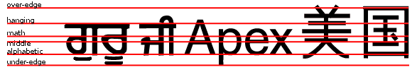
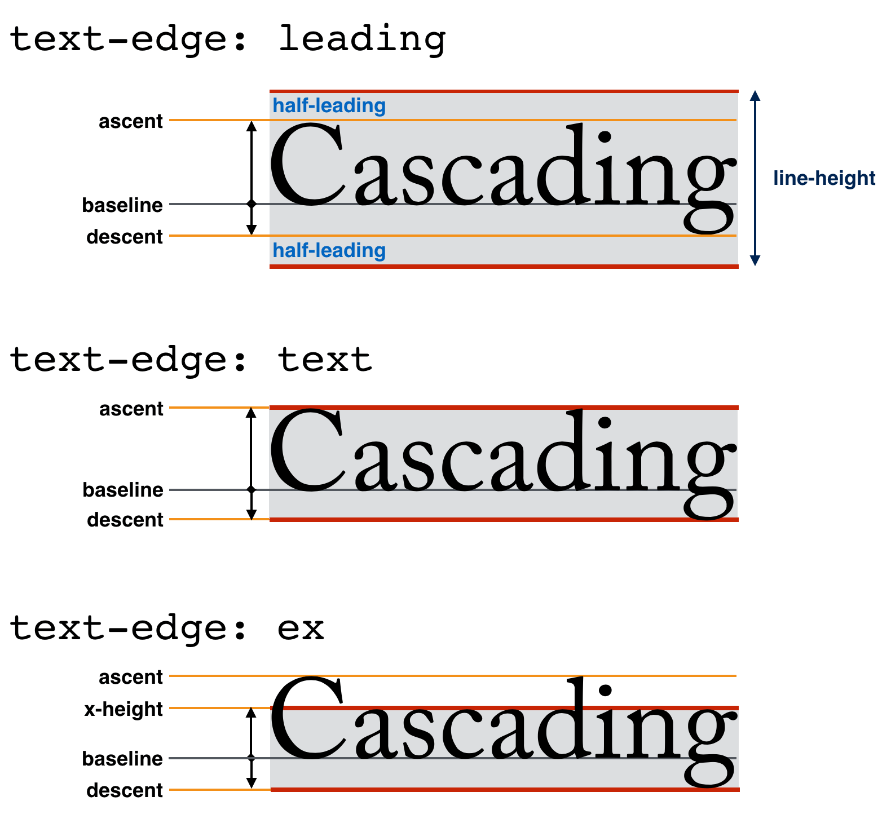
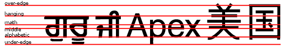
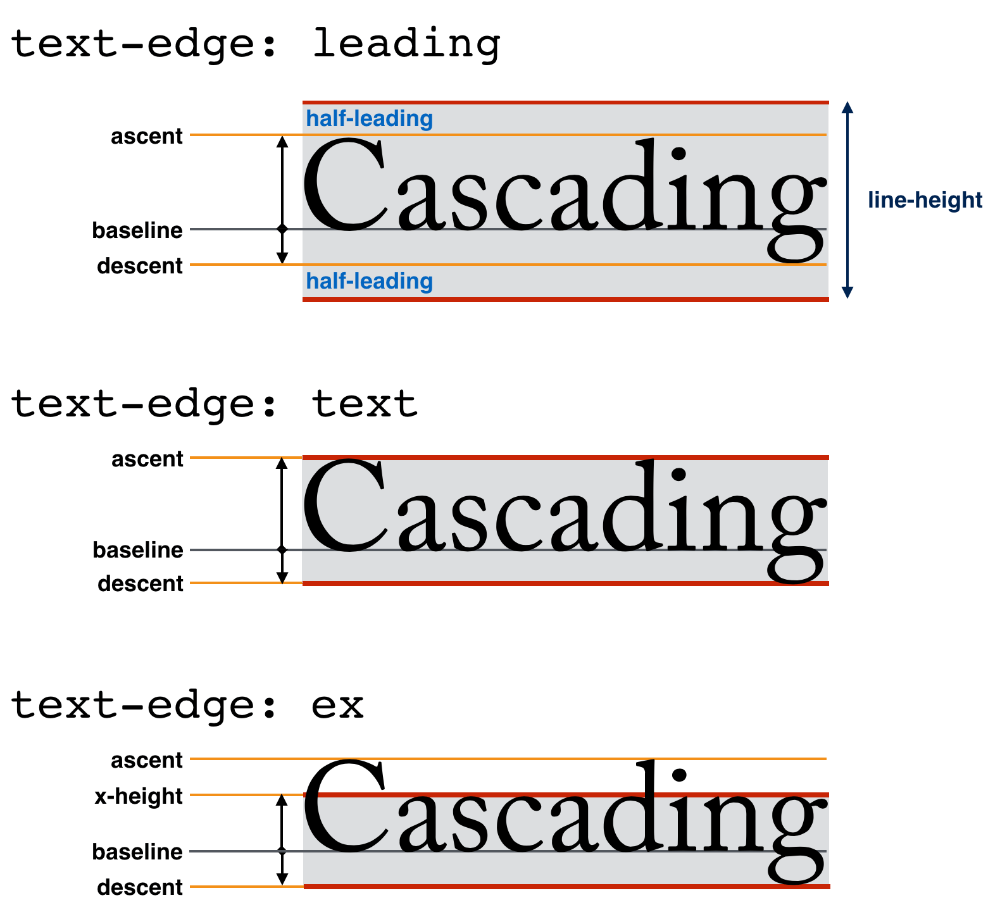

~CSS整形~modelは、［
容器の内側に~flowされる要素や~text
］を，何~行lかに折返すようにする整形を供する。
この~moduleは、この行内~layout~model用の~box~modelを述べるとともに，行内~levelの内容の塊-軸における整列と~sizingを定義して、
`CSS2$r における~modelを拡張する。
◎
The CSS formatting model provides for a flow of elements and text inside of a container to be wrapped into lines. This module describes box model for this inline layout model and defines the block-axis alignment and sizing of inline-level content, extending the model in [CSS2]. It also adds a special layout mode for drop-caps.
次の特能は
~risk下
にあり、勧告候補の期間内に取下げられるかもしれません：
◎
The following features are at-risk, and may be dropped during the CR period:
`initial-letter-wrap$p ~prop
◎
the initial-letter-wrap property
1. 序論
この~moduleは、［
~text／`行内~level$の~box
］が混在した~streamを~lay-outするための~CSS~modelとして，`行内~layout$を定義し、各~行lの中で この内容の`塊-軸$における［
整列／~sizing
］の制御を定義する。
また、
埋没cap, および類似な先頭字の~style付け用の特別~layout~modeを追加する。
◎
This module defines inline layout, the CSS model for laying out a mixed stream of text and inline-level boxes, and defines controls for the block-axis alignment and sizing of this content within each line. It also adds a special layout mode for drop caps and similar initial letter styling.
注記：
［
行-分断法, 両端揃え, その他
］の［
`行内~level$の内容の`行内-軸$における位置決め
］を成す側面は、
CSS Text Module
にて取扱われる。
◎
Note: Line-breaking, justification, and other aspects of inline-axis positioning of inline-level content are handled in the CSS Text Module.
ここでの~layoutの多くの側面は、~font計量に依存する。
~OpenTypeには、［
~Latin／~Cyrillic／~Greek
］用, および~CJK用の関連な計量は存在するが、他の多くの書記体系~用のそれらは欠落している。
例えば，~OpenType~table内には~Hebrew用の視覚的な上端~計量は無い。
この~moduleが全世界で上手く働くためには、［
どの書記体系~用にも，関連な計量を供する~font
］が必要になる。
すなわち、~OpenTypeは そのような計量を許容する必要があり，~font設計者は 正確aな数値を供する必要がある。
◎
Many aspects of layout here depend on font metrics. While the relevant metrics exist in OpenType for Latin/Cyrillic/Greek and for CJK, they are missing for many other writing systems. For example, the visual top metric for Hebrew has no metric in the OpenType tables. For this module to work well for the world, we need fonts to provide the relevant metrics for all writing systems, and that means both that OpenType needs to allow such metrics and font designers need to provide accurate numbers.
1.1. ~module間の相互作用
この~moduleは、
`CSS2$r
§ 行高さの計算に定義される~CSS行内~layoutの［
~model, 特能
］を置換して拡張する。
◎
This module replaces and extends the CSS inline layout model and features defined in [CSS2] section 10.8.
`行内~layout@
においては、`塊~容器$の中で
`行内~整形~文脈@
を形成している［
~text, `行内~levelの~box$
］が混在した再帰的な~streamは、一連の`行l~box$からなる堆積に【！＊】`断片化-$してから，それらの［
~textや~box
］を各`行l~box$の中で互いに整列することにより，~lay-outされる。
◎
In inline layout, a mixed, recursive stream of text and inline-level boxes forming an inline formatting context within a block container are laid out by fragmenting them into a stack of line boxes, and aligning the text and boxes to each other within each line box.
`塊~容器$のうち，`行内~level$の内容
— `行内~box$, `不可分な行内$, `~text連なり$など —
を直に包含するものは、その内容を~lay-outするための`行内~整形~文脈$を確立する。
`塊~容器$の`内容~辺$は、［
その`行内~整形~文脈$に関与している各`行内~levelの~box$
］用の`包含塊$を形成する。
◎
Any block container that directly contains inline-level content—such as inline boxes, atomic inlines, and text runs—establishes an inline formatting context to lay out its contents. The block container’s content edges form the containing block for each of the inline-level boxes participating in its inline formatting context.
そのような`塊~容器$は、
`根~行内~box@
も生成する
— それは、`行内~level$の内容~すべてを保持する`匿名$な`行内~box$である（したがって，`行内~整形~文脈$内の~textは、どれも［
`根~行内~box$, または その子孫を成す ある`行内~box$
］に直に包含される）。
`根~行内~box$は、親の`塊~容器$から~styleを継承する他は，~style不能である。
◎
The block container also generates a root inline box, which is an anonymous inline box that holds all of its inline-level contents. (Thus, all text in an inline formatting context is directly contained by an inline box, whether the root inline box or one of its descendants.) The root inline box inherits from its parent block container, but is otherwise unstyleable.
`行内~整形~文脈$における内容は、`行内-軸$に沿って~lay-outされ，
~Unicode双方向-~algoとその制御
`CSS-WRITING-MODES-3$r に則って順序付けられ，
`CSS-TEXT-3$r における植字~制御に則って分布される。
`行内-軸$における［
`~margin$, `~border$, `~padding$
］は、`行内~levelの~box$どうしの合間で尊重される（一方で~marginは`相殺-$されない）。
`行内~level$の内容が成す 1 本の行lを形成する~boxたちを包含することになる，矩形な区画は、
`行l~box@
と呼ばれる。
◎
In an inline formatting context, content is laid out along the inline axis, ordered according to the Unicode bidirectional algorithm and its controls [CSS-WRITING-MODES-3] and distributed according to the typesetting controls in [CSS-TEXT-3]. Inline-axis margins, borders, and padding are respected between inline-level boxes (and their margins do not collapse). The resulting rectangular area that contains the boxes that form a single line of inline-level content is called a line box.
注記：
［
`行l~box$, `行内~box$, `行内~levelの~box$
］は、それぞれに異なる。
各種~box型，および関係する各種用語についての詳しい論は、 `CSS-DISPLAY-3$r を見よ。
◎
Note: Line boxes and inline boxes and inline-level boxes are each different things! See [CSS-DISPLAY-3] for an in-depth discussion of box types and related terminology.
`行l~box$は、`行内~整形~文脈$の中で`行内~level$の内容を保持する必要に応じて作成される。
`行内~box$が［
`行l~box$の`論理-横幅$を超過する／
`強制d行l分断$を包含する
］ときは、いくつかの`断片$ `css-break-3$r
に分割され（ `CSS-TEXT-3$r
§ 行l分断-法と単語~境界
を見よ），複数の行l~boxに区分される。
`行l~box$は
— `複柱~layout$における`柱~box$ `CSS-MULTICOL-1$r の様に —
`整形~文脈$により生成される`断片化~容器$であり，~CSS`~box~tree$の一部を成さない。
◎
Line boxes are created as needed to hold inline-level content within an inline formatting context. When an inline box exceeds the logical width of a line box, or contains a forced line break, it is split (see CSS Text 3 §5 Line Breaking and Word Boundaries) into several fragments [css-break-3], which are partitioned across multiple line boxes. Like column boxes in multi-column layout [CSS-MULTICOL-1], line boxes are fragmentation containers generated by their formatting context, and are not part of the CSS box tree.
注記：
`行内~box$は、
双方向-~text処理に因り，同じ行l~boxの中でいくつかの断片に分割される
こともある。
`CSS-WRITING-MODES-3$r を見よ。
◎
Note: Inline boxes can also be split into several fragments within the same line box due to bidirectional text processing. See [CSS-WRITING-MODES-3].
`行l~box$は、`塊~容器$を成す直な内容として，容器の`塊~flow方向$に堆積され、容器の中で `align-content$p `CSS-ALIGN-3$r に指定されるとおりに整列される。
したがって，`行内~整形~文脈$は、`行l~box$の堆積を成す。
`行l~box$たちは、~~隙間なく堆積され（他所で指定されるものは除けば
— 例： `浮動体$の
clearance
など），決して重合しない。
◎
Line boxes are stacked as the direct contents of the block container box in its block flow direction and aligned within this container as specified by align-content [CSS-ALIGN-3]. Thus, an inline formatting context consists of a stack of line boxes. Line boxes are stacked with no separation (except as specified elsewhere, e.g. for float clearance) and they never overlap.
一般に，`行l~box$の［
`行-左端$／`行-右端$
］辺は，その`包含塊$の［
`行-左端$／`行-右端$
］辺に触れる
— したがって，`行l~box$の`論理-横幅$は、その`包含塊$（すなわち，`塊~容器$の`内容~box$）の【！`内縁$】`論理-横幅$に等しくなる。
しかしながら，`包含塊$の辺と`行l~box$の辺の合間に浮動体や`先頭字$が来ることもあり、可用な空間を
— したがって，影響iが及ぶ`行l~box$の`論理-横幅$を —
抑制する（
~CSS2 § 行内~整形~文脈／
~CSS2 § 浮動体 ／
§ 先頭字
を見よ）。
◎
In general, the line-left edge of a line box touches the line-left edge of its containing block and the line-right edge touches the line-right edge of its containing block, and thus the logical width of a line box is equal to the inner logical width of its containing block (i.e. the block container’s content box). However, floating boxes or initial letter boxes can come between the containing block edge and the line box edge, reducing the space available to, and thus the logical width of, any such impacted line boxes. (See CSS 2.2 §9.4.2 Inline formatting contexts/CSS 2.2 §9.5 Floats and § 7 Initial Letters.)
`行l~box$の中で，`行内~level$の~boxどうしが`塊-軸$において整列される仕方には、いくつかあり，それらの［
`上面$／`下面$
］辺が整列されることもあれば，それらの中の~textの基底線が整列されることもある。
`vertical-align$p とその下位propを見よ。
◎
Within the line box, inline-level boxes can be aligned along the block axis in different ways: their over or under edges can be aligned, or the baselines of text within them can be aligned. See vertical-align and its longhands.
`行l~box$の`論理-縦幅$は、整列された後に，その内容が収まるよう決定される
— どう収まるかは、［
`line-height$p,
`text-edge$p
］が制御する。
加えて，`塊~容器$内の［
最初／最後
］の行l~boxは、
`leading-trim$p により削られ得る。
◎
The logical height of a line box is then fitted to its contents; this fit is controlled by line-height and text-edge. The first/last line boxes in a block container may additionally be trimmed by leading-trim.
◎
Line boxes that contain＼
no text,＼
no preserved white space,＼
no inline boxes with non-zero margins, padding, or borders,＼
and no other in-flow content (such as atomic inlines or ruby annotations),＼
and do not end with a forced line break＼
must be treated as zero-height line boxes for the purposes of determining the positions of any elements inside of them (such as absolutely positioned boxes), and must be treated as not existing for any other purpose (such as collapsing margins).
2.2. 行l~boxの中の~layout
上で述べたとおり、~UAは，`行内~levelの~box$たちを`行l~box$たちが成す堆積の中に~flowする。
各`行l~box$ %行l~box の中の~layoutは、次に従って遂行され，その中の各［
`~box断片$／`行l~box$
］を独立に~sizeして位置する：
◎
As described above, user agents flow inline-level boxes into a stack of line boxes. Layout within each line box is performed, sizing and positioning each box fragment and line box independently, as follows:
%~box~list 内の各 %~box の`~layout限界域$を計算する
— %~box に応じて：
◎
The layout bounds of each inline-level box in the line box are calculated.
`不可分な行内$であるならば【！`置換され$る要素／`行内-塊$など】
⇒
%~box の`~margin~box$になる
◎
For atomic inlines such as replaced elements and inline blocks: this is their margin box.
`根~行内~box$／［
`行内~box$であって，
`text-edge$p は `leading$v1
］ならば
⇒
`line-height$p の使用~値から導出され，［
`~margin$／`~border$／`~padding$
］は無視される
— `§ 行内~boxが供与する論理-縦幅$を見よ
◎
For the root inline box, and for inline boxes with text-edge: leading: this derived from their used line-height, ingoring any margin/border/padding see § 5.3 Logical Height Contributions of Inline Boxes.
他の`行内~box$ならば
⇒
`text-edge$p 計量から導出され，［
`~margin$／`~border$／`~padding$
］を含む
— `§ 行内~boxが供与する論理-縦幅$を見よ
◎
For other inline boxes: this is derived from their text-edge metrics, and includes any margin/border/padding, see § 5.3 Logical Height Contributions of Inline Boxes
%~box~list 内の~boxを［
`dominant-baseline$p,
`vertical-align$p
］に則って`塊-軸$において整列する
— その際には、 `baseline-shift$p に`行lに相対的な値$を伴うものは［
%行l~box の`論理-縦幅$【！縦幅】を最小~化するよう整列する
］ものと見做す。
◎
The inline-level boxes are aligned in the block axis according to dominant-baseline and vertical-align. Those with line-relative values for baseline-shift are assumed to be aligned so as to minimize the line box height.
%行l~box の`論理-縦幅$は、整列した結果における［
%~box~list 内のすべての~boxの`~layout限界域$
］を正確に含むよう計算される
◎
The line box’s logical height is calculated to exactly include the aligned layout bounds of all its inline-level boxes.
%~box~list 内の~boxのうち，次に該当するものは %行l~box を基準に整列する：
`根~行内~box$を成すものの`整列-済み下位tree$
`vertical-align$p に`行lに相対的な値$【！行-~box相対】を伴うもの
◎
The root inline box’s aligned subtree and boxes with line-box–relative vertical-align values are aligned with respect to the line box.
他の内容より高い~boxが［
上端／下端／中央
］に整列される場合に何をするか定義する。
◎
Define what to do for top/bottom/center aligned boxes that are taller than the rest of the content.
注記：
空な`行内~box$であっても，［
`~margin$,
`~padding$,
`~border$,
`line-height$p【`支柱$】
］はあるので、内容を伴う~boxと同じく，これらの計算に波及する。
◎
Note: Empty inline boxes still have margins, padding, borders, and a line-height, and thus influence these calculations just like boxes with content.
2.3. 塗ng順序
`有位置な~box$用に指定されるもの（ `CSS-POSITION-3$r を見よ）を除いて、`行内~levelの~box$たちは`文書~順序$で塗られ、`z-index$p ~propは，一般に適用されない。
◎
Except as specified for positioned boxes (see [CSS-POSITION-3]) inline-level boxes are painted in document order; the z-index property does not generally apply.
3. 基底線と整列の計量
3.1. 基底線 序論
`基底線@
（ `baseline^en ）とは、［
~textの個々の~glyphが，それに沿って整列される
］ような，行l~boxの`行内-軸$に沿う線である。
基底線は、~fontの中で~glyphを~designする際の，基準線になる（例えば，ほとんどの~alphabetic~glyphは、概して，その下端が~alphabetic基底線に整列される）。
また，基底線は、植字において ~fontや~font~sizeが相異なる~glyphたちを整列するときの，基準線になる。
◎
A baseline is a line along the inline axis of a line box along which individual glyphs of text are aligned. Baselines guide the design of glyphs in a font (for example, the bottom of most alphabetic glyphs typically align with the alphabetic baseline), and they guide the alignment of glyphs from different fonts or font sizes when typesetting.
`alphabetic-baseline-in-two-font-sizes^dgm
~font~sizeが異なる 2 つの~alphabetic~textにおける，基底線と~em~box
◎
Alphabetic text in two font sizes with the baseline and em-boxes
選好される`基底線$は、書記体系ごとに異なる。
◎
Different writing systems prefer different baselines.
`script-preferred-baselines^dgm
様々な書記体系にて選好される基底線
◎
Preferred baselines in various writing systems
きちんと構築された~fontは
`基底線~table@
を包含する。
それは、~fontの~design座標~空間の中で 1 本以上の`基底線$の位置を指示する。
（~design座標~空間は~font~sizeにより拡縮される）
◎
A well-constructed font contains a baseline table, which indicates the position of one or more baselines within the font’s design coordinate space. (The design coordinate space is scaled with the font size.)
`baselines^dgm
複数の用字系が混在した~fontは、きちんと設計されていれば，その~glyphたちが同じ座標~空間の中で一緒に植字されたときにも，互いに調和するように位置される。
その基底線~tableは，個々の~glyph形状に合致するように構築され、各~基底線が，~glyphが選好する用字系に合致する所に位置するようになる。
◎
In a well-designed mixed-script font, the glyphs are positioned in the coordinate space to harmonize with one another when typeset together. The baseline table is then constructed to match the shape of the glyphs, each baseline positioned to match the glyphs from its preferred scripts.
`基底線~table$は，~fontの~propであり、種々の基底線の位置は，~fontの中のすべての~glyphに適用される。
◎
The baseline table is a property of the font, and the positions of the various baselines apply to all glyphs in the font.
~fontには、横書き~text, 縦書き~textのそれぞれに対し，その整列~用の`基底線~table$を別々に供するものもある。
~UAは、縦書き`~typographic~mode$においては縦書き用のそれを,
そうでなければ横書き用のそれを利用するべきである。
◎
Different baseline tables can be provided for alignment in horizontal and vertical text. UAs should use the vertical tables in vertical typographic modes and the horizontal tables otherwise.
注記：
~fontには、各~軸ごとに，複数の`基底線~table$を有するものもある。
~UAは、［
`font-language-override$p, `内容~言語$
］を考慮に入れて，適切な~tableを選ぶ責務がある。
要求された計量が~fontに欠落している場合、~UAは それを合成するモノトスル。
◎
Note: Fonts can have more than one baseline table in each axis; the UA is responsible for choosing the appropriate table in consideration of font-language-override and the content language.
3.2. 基底線と計量
~CSSは、［
整列,
~box~sizing,
先頭字~layout
］などの`行内~layout$の機能~用の`基底線$として，次に挙げる，~textに基づく計量を利用する：
◎
CSS uses the following text-based metrics as baselines for inline layout functions such as alignment, box sizing, and initial letter layout.
~CSS~WGは、どの基底線~値が必要とされるか，それらを利用する各~prop（
`dominant-baseline$p,
`alignment-baseline$p,
`initial-letter-align$p
）用に知りたい
— どれを落とせるか／何を追加する必要があるか。
`859$issue を見よ。
◎
The CSSWG would like to know which baseline values are necessary for each property that uses them (dominant-baseline, alignment-baseline, initial-letter-align): if any can be dropped, or any need to be added. See Issue 859.
`alphabetic@bL
［
~Latin, ~Cyrillic, ~Greek, その他~多くの用字系
］を書くときに利用される
— （全部ではないが）それらのほとんどの文字（
`m^gph, `Ш^gph, `Δ^gph
など）の下端に対応する。
~font~design座標系においては 0 として表現されることが多い。
◎
Used in writing Latin, Cyrillic, Greek, and many other scripts, corresponds to the bottom of most, but not all, their characters, (such as “m”, “Ш”, “Δ”). Often represented as zero in font design coordinate systems;＼
~OpenTypeにおいては、
`romn^c にアテガわれる。
【参照（以下同様）】
◎
assigned romn in OpenType.
`cap-height@bL
［
~Latin, ~Cyrillic, ~Greek, 等々
］における~~大文字（
`T^gph, `Б^gph, `Σ^gph
など）の上端に対応する。
◎
Corresponds to the top of capital letters (such as “T”, “Б”, “Σ”) in Latin, Cyrillic, Greek, etc.＼
~OpenTypeにおいては、
`sCapHeight^c を利用して計算される。
◎
Calculated using sCapHeight in OpenType.
`x-height@bL
［
~Latin, ~Cyrillic, ~Greek, 等々
］における短小な~~小文字（
`m^gph, `л^gph, `α^gph
など）の上端に対応する。
◎
Corresponds to the top of short lowercase letters (such as “m”, “л”, “α”) in Latin, Cyrillic, Greek, etc.＼
~OpenTypeにおいては、
`sxHeight^c を利用して計算される。
◎
Calculated using sxHeight in OpenType.
`x-middle@bL
［
`alphabetic$bL 基底線,
`x-height$bL 基底線
］の中間に対応する。
◎
Corresponds to halfway between the alphabetic and x-height baselines.
`ideographic-over@bL
~CJK（~Han／~Hangul／~Kana）~textの`行-上面$
~design辺に対応する。
◎
Corresponds to the line-over design edge of CJK (Han/Hangul/Kana) text.＼
~OpenTypeにおいては、
`idtp^c にアテガわれる。
◎
Assigned idtp in OpenType.
`ideographic-under@bL
~CJK（~Han／~Hangul／~Kana）~textの`行-下面$
~design辺に対応する。
◎
Corresponds to the line-under design edge of CJK (Han/Hangul/Kana) text.＼
~OpenTypeにおいては、
`ideo^c にアテガわれる。
◎
Assigned ideo in OpenType.
`central@bL
`ideographic central^bL 基底線
— ［
`ideographic-under$bL 基底線,
`ideographic-over$bL 基底線
］の中間 —
に対応する。
◎
Corresponds to the ideographic central baseline, halfway between the ideographic-under and ideographic-over baselines.
`ideographic-ink-over@bL
~CJK（~Han／~Hangul／~Kana）~textの`行-上面$ ~ink辺に対応する。
◎
Corresponds to the line-over ink edge of CJK (Han/Hangul/Kana) text.＼
~OpenTypeにおいては、
`icft^c にアテガわれる。
【 `ideographic character face top^en ／平均字面の上端】
◎
Assigned icft in OpenType.
`ideographic-ink-under@bL
~CJK（~Han／~Hangul／~Kana）~textの`行-下面$ ~ink辺に対応する。
◎
Corresponds to the line-under ink edge of CJK (Han/Hangul/Kana) text.＼
~OpenTypeにおいては、
`icfb^c にアテガわれる。
【 `ideographic character face bottom^en ／平均字面の下端】
◎
Assigned icfb in OpenType.
`hanging@bL
吊下げ基底線に対応する。
~Tibetanや類似な［
文字大小が無い（ `unicameral^en ）用字系のうち，絶対的でないが はっきりした上端~辺を伴うもの
］に属する文字は、そこから “吊下がる” ように見える。
◎
Corresponds to hanging baseline from which characters in Tibetan and similar unicameral scripts with a strong but not absolute top edge seem to “hang”.＼
~OpenTypeにおいては、
`hang^c にアテガわれる。
◎
Assigned hang in OpenType.
`math@bL
中央（ `center^en ）基底線に対応する。
数学用の文字が，その周りで~designされるような。
◎
Corresponds to center baseline around which mathematical characters are designed.＼
~OpenTypeにおいては、
`math^c にアテガわれる。
◎
Assigned math in OpenType.
`text-over@bL
`CSS2$r において、`行内~box$の`内容~box$の`行-上面$辺として利用される計量に対応する。
◎
Corresponds to the metric used as the line-over edge of an inline’s content box per [CSS2].
`text-under@bL
`CSS2$r において、`行内~box$の`内容~box$の`行-下面$辺として利用される計量に対応する。
◎
Corresponds to the metric used as the line-under edge of an inline’s content box per [CSS2].
`em-over@bL
［
`em-over$bL から `em-under$bL までが 1em になる
］ことを確保するよう正規化された，概念的な`~ascent計量$に対応する。
§ `em-over^bL と `em-under^bL の計算-法
を見よ。
◎
Corresponds to a conceptual ascent normalized to ensure 1em between em-over and em-under. See A.1: Calculating Em-over and Em-under.
`em-under@bL
［
`em-over$bL から `em-under$bL までが 1em になる
］ことを確保するよう正規化された，概念的な`~descent計量$に対応する。
§ `em-over^bL と `em-under^bL の計算-法
を見よ。
◎
Corresponds to a conceptual descent normalized to ensure 1em between em-over and em-under. See A.1: Calculating Em-over and Em-under.
注記：
これらの計量は、目視上の~design計量であり，実際の~glyph外形線に正確に対応するとは限らない。
◎
Note: These metrics are optical design metrics, and therefore do not necessarily correspond exactly to actual glyph outlines.
一般に，これらの計量は、適切な~fontから採られるが、［
欠落している場合／~textではなく~boxから導出される必要がある場合
］には，合成するモノトスル。
§ ~glyphと~boxの各種~基底線,
§ 整列~計量の合成-法
を見よ。
◎
In general, these metrics are taken from the appropriate font, but if they are missing or need to be derived from a box rather than text, they must be synthesized, see § 3.3 Baselines of Glyphs and Boxes and Appendix A: Synthesizing Alignment Metrics.
3.2.1. ~ascent／~descentの計量
~CSSにおいては、どの~fontも，基底線より［
上側の高さ, 下側の深さ
］を指定する~font計量を備えるものと見做される
— これらは順に
`~ascent計量@,
`~descent計量@
と呼ばれる。
~CSSにおいては、これらは`行内~整形~文脈$内の［
~text, ~box
］たちを~lay-outするために利用される。
これらは、一体としての~fontの計量であり、個々の~glyphの~ascenderや~descenderに対応する必要はないことに注意。
◎
CSS assumes that every font has font metrics that specify a characteristic height above the baseline—called the ascent metric—and a characteristic depth below it—called the descent metric—which CSS uses for laying out text and boxes in an inline formatting context. Note that these are metrics of the font as a whole and need not correspond to the ascender and descender of any individual glyph.
注記：
［
~OpenType／~TrueType
］~fontを利用する実装は、~CSS~layout用に［
`~ascent計量$, `~descent計量$
］を見出すときに，（現在の要素の~font~sizeに拡縮した後の）［
~fontの OS/2 ~tableによる計量
`sTypoAscender^c, `sTypoDescender^c
］を利用することが推奨される。
これらの計量が無い下では、［
HHEA ~tableによる計量
“Ascent”, “Descent”
］を利用するべきである。
◎
Note: It is recommended that implementations that use OpenType or TrueType fonts use the metrics sTypoAscender and sTypoDescender from the font’s OS/2 table (after scaling to the current element’s font size) to find the ascent metric and descent metric for CSS layout. In the absence of these metrics, the "Ascent" and "Descent" metrics from the HHEA table should be used.
3.2.2. 行l隙間~計量
~font形式には、推奨される［
“行l隙間” ／ “外部~leading”
］計量を~fontに許容するものもある。
この計量は、
`行l隙間~計量@
として参照rされ，
`line-height$p が `normal$v1 のときに
— `§ 行内~boxが供与する論理-縦幅$にて述べるように —
`行l~box$の`論理-縦幅$の計算に組入れられてもヨイ。
◎
Font formats can allow for a font-recommended “line gap” or “external leading” metric. This metric is referred to as the line gap metric, and may be incorporated into the line box logical height calculations when line-height is normal as described in § 5.3 Logical Height Contributions of Inline Boxes.
注記：
~OpenTypeにおいては、`行l隙間~計量$は、［
`sTypoLineGap^c ／ `hhea.lineGap^c
］として見出せる。
◎
Note: In OpenType, the line gap metric can be found as sTypoLineGap or hhea.lineGap.
3.3. ~glyphと~boxの各種~基底線
各［
~font／~glyph／`行内~levelの~box$
］には、各 種別の`基底線$に対し，［
`塊-軸$における その位置を指示する，基底線~座標
］があるものと見做される。
そのような`基底線$の集合は、それぞれの
`基底線~集合@
と呼ばれる。
［
~box／~glyph
］の`基底線~集合$を成す`基底線$のうち，`整列~文脈$の中で［
~box／~glyph
］を整列するために利用されるものは、［
~box／~glyph
］の`整列~基底線$と呼ばれる。
~boxの中で~boxの内容を整列するために利用される`基底線$は、~boxの`支配的な基底線$と呼ばれる。
◎
Each font, glyph, and inline-level box is assumed to have a baseline coordinate for each baseline type indicating that baseline’s position on its block axis. The set of such baselines is called its baseline set. The baseline from this set that is used to align the box or glyph within its alignment context is called its alignment baseline; the baseline used to align its content within itself is called its dominant baseline.
個々の~glyph用の`基底線~集合$は、当の~fontの`基底線~table$から導出される。
`行内~box$用の`基底線~集合$は、~boxに`可用な最初の~font$から導出される
— ~boxが その~fontに属する~glyphを実際に包含するかどうかに関わらず。
要求された計量が~fontに欠落している場合、~UAは，それらを合成するモノトスル
— § ~text用の基底線（および 他の~font計量）の合成-法
を見よ。
◎
For an individual glyph, the baseline set derives from the font’s baseline table. For an inline box, it derives from its first available font regardless of whether the box actually contains any glyphs from that font. If the requisite metrics are missing from a font, the UA must synthesize them, see A.2: Synthesizing Baselines (and Other Font Metrics) for Text.
他の`~box$用の`基底線~集合$は、［
その `baseline-source$p,
それが関与する`整形~文脈$の規則
］に則って，その内容から~~代表として導出される。
`不可分な行内$のうち［
【それが関与する】`行内~整形~文脈$の`行内-軸$用には、`基底線~集合$が無いもの
］用の`整列~基底線$は、その`~margin~box$から`合成-$される
— § 不可分な行内~用の基底線の合成-法
を見よ。
◎
For other boxes, its baseline set is nominally derived from its contents in accordance with baseline-source and the rules of the formatting context in which it participates. For an atomic inline box with no baseline set in the inline formatting context’s inline axis its alignment baselines are synthesized from its margin box, see A.3: Synthesizing Baselines for Atomic Inlines.
4. 基底線 整列
~CSS`整形~文脈$は，通例的に、~boxを その容器の辺を基準に整列することにより，~boxの内容を位置する。
一方で，`行内~layout$では、各~boxの`基底線$を利用して，~boxどうしを`塊-軸$において互いに整列することにより位置する。
◎
While CSS formatting contexts usually position content by aligning boxes with respect to their container’s edges, inline layout positions boxes in the block axis by aligning them with respect to each other using their baselines.
より特定的には，各［
~glyph／`行内~levelの~box$
］は、概して，`塊-軸$において［
その`整列~基底線$が親の対応する`基底線$に合致する
］よう位置することにより整列され、必要なら，`整列~後のズラシ$に則って その位置からズラされる。
~boxの`整列~基底線$は、`vertical-align$p の `alignment-baseline$p 下位propにより選定され，既定では親の`支配的な基底線$になる。
◎
More specifically, each glyph or inline-level box is typically aligned in the block axis by positioning its alignment baseline to match the corresponding baseline of its parent, and then potentially shifted from that position according to its post-alignment shift. The alignment baseline of the box is selected by the alignment-baseline longhand of vertical-align; this defaults to the parent’s' dominant baseline.
次の~style規則が与えられたとする：
◎
And the following style rule:
span.inner { font-size: 75%; }
親（ `.outer^css ）と子（ `.inner^css ）の`基底線~集合$は、~font~sizeの相違に因り合致しない。
`支配的な基底線$は，（横書き`~typographic~mode$における既定の） `alphabetic$bL 基底線なので、子~boxは、親と子の `alphabetic$bL 基底線を合致させることにより親に整列される。
◎
The baseline sets of the parent (.outer) and the child (.inner) will not match up due to the font size difference. Since the dominant baseline is the alphabetic baseline (the default in horizontal typographic modes), the child box is aligned to its parent by matching up their alphabetic baselines.
【画像だが、まだ無い。】
`baseline-align-sizes^dgm
上の例において，
`.inner^css 要素の `vertical-align$p に `super^v をアテガった場合、
`.inner^css の基底線は同じ規則を利用して親に整列されるが、それに加え，子は上付文字の位置にズラされる。
◎
If we assign vertical-align: super to the .inner element from the example above, the same rules are used to align the .inner child to its parent; the only difference is in addition to the baseline alignment, the child is shifted to the superscript position.
この~propは、
`支配的な基底線@
を指定する。
それは、~boxの中で内容を整列するために利用される既定の基底線 種別になる。
◎
This property specifies the dominant baseline, which is the default baseline type used to align content within the box.
`支配的な基底線$は、当の~box %~box に応じて：
◎
↓
`行内~box$であるならば、
%~box 内の［
~text／`行内~level$の子~box
］を整列するときに利用される（後者は `vertical-align$p により他が指定されない限り）
— 各［
~glyph／子~box
］の対応する基底線を %~box の`支配的な基底線$に整列することにより。
◎
For inline boxes, the dominant baseline is used to align the box’s text (and, unless otherwise specified by vertical-align, any inline-level child boxes) by aligning each glyph/box’s corresponding baseline to the box’s own dominant baseline.＼
他の場合、［
%~box が確立する`整列~文脈$において`基底線~整列$に関与している各~box
］の既定の`整列~基底線$を指示する（ `alignment-baseline$p `CSS-ALIGN-3$r を見よ）。
◎
For other boxes, it indicates the default alignment baseline of any boxes participating in baseline alignment in the box’s alignment context; see (alignment-baseline: baseline and [CSS-ALIGN-3]).
◎
Equivalent to alphabetic in horizontal writing modes and in vertical writing modes when text-orientation is sideways. Equivalent to central in vertical writing modes when text-orientation is mixed or upright.
ただし，~SVG~textにおいては、~glyphの原点（座標に基づく~glyphの位置決めに利用される）は常に，`縦組み$における `central$v に対するときと同じに取扱われる。
◎
However, in SVG text, the origin point of glyphs (used for coordinate-based glyph positioning) is always handled as for central in vertical writing modes.
`text-bottom@v
`text-under$bL 基底線を利用する。
◎
Use the text-under baselines.
`alphabetic@v
`alphabetic$bL 基底線を利用する。
◎
Use the alphabetic baselines.
`ideographic@v
`ideographic-under$bL 基底線を利用する。
◎
Use the ideographic-under baselines.
`middle@v
`x-middle$bL 基底線を利用する
— だだし， `text-orientation$p が `upright^v の下では（
`alphabetic$bL, `x-height$bL
両~基底線とも本質的に意味がないので）、
`central$bL 基底線を利用する。
◎
Use the x-middle baselines; except under text-orientation: upright (where the alphabetic and x-height baselines are essentially meaningless) use the central baseline.
`central@v
`central$bL 基底線を利用する。
◎
Use the central baselines.
`mathematical@v
`math$bL 基底線を利用する。
◎
Use the math baselines.
`hanging@v
`hanging$bL 基底線を利用する。
◎
Use the hanging baselines.
`text-top@v
`text-over$bL 基底線を利用する。
◎
Use the text-over baselines.
支配的な基底線の序論
`CSS-WRITING-MODES-3$r
も見よ。
◎
See [CSS-WRITING-MODES-3] for an introduction to dominant baselines.
方位が混在した縦書き用の挙動を定義する
— 指定された基底線が `central$v でないときにイミを成すような。
◎
Define behavior for mixed vertical orientations that isn’t nonsensical when specified baseline isn’t central.
この`略式~prop$は、単独の宣言~内で次を指定することにより，当の行内~levelの~boxが 行lの中でどう整列されるかを指定する
⇒＃
`整列~基底線$の種別（ `alignment-baseline$p ）,
`基底線~整列~選好$（ `baseline-source$p ）,
`整列~後のズラシ$（ `baseline-shift$p ）
◎
This shorthand property specifies how an inline-level box is aligned within the line by specifying its alignment baseline type (alignment-baseline), baseline alignment preference (baseline-source), and post-alignment shift (baseline-shift) in a single declaration.
［
`first$v1 ／ `last$v1
］は、
`baseline-source$p を設定する
— 指定されていない場合、
`baseline-source$p は `auto$v1 に設定し直される
【この略式~propには、 `auto^v は明示的に指定できない】
。
他の値は、対応する下位prop用の値を与える。
◎
If first or last is specified, it sets baseline-source (which is otherwise reset to auto). Other values are as for the corresponding longhand properties, see below.
作者は、下位propの代わりに，この略式~prop（ `vertical-align$p ）を利用するべきである
— 次のいずれかに該当しない限り
⇒＃
下位propを独立に~cascadeさせるため必要になる／
（~SVG要素に対し）旧来の~SVG実装を~supportする
◎
Authors should use this shorthand (vertical-align) instead of its longhands, unless specifically needing to cascade its longhands independently or (on SVG elements) to support legacy SVG implementations.
注記：
`vertical-align$p は、~table~cellの整列
— 特定的には，~table~cellの `align-content$p に対する `normal$vX の挙動【以下略】 —
にも影響し得る。
`CSS-ALIGN-3$r
§ ~block容器（~table~cellも含む）
を見よ。
◎
Note: vertical-align can also affect the alignment of table cells when align-content is normal. Specifically, top (baseline-shift: top) maps it to start, bottom (baseline-shift: bottom) to end, and otherwise middle (alignment-baseline: middle) to center. See CSS Box Alignment 3 §5.1.1 Block Containers (Including Table Cells).
この~propは、~boxの
`基底線~整列~選好@
を指示する
— すなわち，`行内~level$の~boxに基底線~用にアリな情報~源が複数あるとき（複数~行lを成す［
`行内-塊$や行内~flex容器
］用など）、［
`最初の基底線~集合$, `最後の基底線~集合$
］のどちらが整列~用に選好されるかを指定する。
◎
When an inline-level box has more than one possible source for baseline information (such as for a multi-line inline block or inline flex container) this property specifies whether the first baseline set or last baseline set is preferred for alignment, indicating the box’s baseline alignment preference.＼
各種 値の意味は：
◎
Values have the following meanings:
`auto@v
`行内-塊$用には`最後の基底線による整列$を指定する。
◎
Specifies last-baseline alignment for inline-block,＼
他のもの用には`最初の基底線による整列$を指定する。
◎
first-baseline alignment for everything else.
この~propは、~boxの
`整列~基底線@
を指定する。
それは、~boxを
— `整列~後のズラシ$が適用-可能なら，それを適用するに先立って —
整列するために利用される`基底線$を与える。
◎
This property specifies the box’s alignment baseline: the baseline used to align the box prior to applying its post-alignment shift (if applicable).
各種 値は、次に従うものと定義される：
◎
Values are defined as follows:
`baseline@v
親~boxが選んだ`支配的な基底線$を利用する。
◎
Use the dominant baseline choice of the parent.
`text-bottom@v
`text-under$bL 基底線を利用する。
◎
Use the text-under baseline.
`alphabetic@v
`alphabetic$bL 基底線を利用する。
◎
Use the alphabetic baseline.
`ideographic@v
`ideographic-ink-under$bL 基底線を利用する。
◎
Use the ideographic-under baseline.
`middle@v
`x-middle$bL 基底線を利用する
— だだし， `text-orientation$p が `upright^v の下では（
`alphabetic$bL, `x-height$bL
両~基底線とも本質的に意味がないので）、
`central$bL 基底線を利用する。
◎
In general, use the x-middle baselines; except under text-orientation: upright (where the alphabetic and x-height baselines are essentially meaningless) use the central baseline instead.
`central@v
`central$bL 基底線を利用する。
◎
Use the central baseline.
`mathematical@v
`math$bL 基底線を利用する。
◎
Use the math baseline.
`text-top@v
`text-over$bL 基底線を利用する。
◎
Use the text-over baseline.
これらの値は、`基底線~整列$を遂行するときに［
~boxの どの`基底線$が ~boxが属する`整列~文脈$の対応する`基底線$に整列されるか
］を指定する。
（`行内~整形~文脈$においては、`行内~level$の［
`~box断片$／~glyph
］は、それらの親の`行内~box$`断片$により確立された`基底線~整列$を，親の`行内-軸$沿いに共有する【親が行内~boxであるならば】。
他の`整形~文脈$における基底線~整列は、
`CSS-ALIGN-3$r
§ 基底線~整列の~group分け
を見よ）。
~SVG~text~layoutにおいては、これらの値は，代わりに~SVGの`現在の~text位置$に整列される基底線を指定する。
◎
When performing baseline alignment, these values specify which baseline of the box is aligned to the corresponding baseline of its alignment context. (In an inline formatting context, inline-level box fragments and glyphs share an alignment context established by their parent inline box fragment along its inline axis. For other formatting contexts, see CSS Box Alignment 3 §9.2 Baseline Alignment Grouping.) In SVG text layout, these values instead specify the baseline that is aligned to the SVG current text position.
4.2.2.1. ~SVG用の旧来の値
~SVG実装は、旧来の内容を~supportするためとして，次の別名も~supportしてもヨイ：
◎
SVG implementations may support the following aliases in order to support legacy content:
これらの値は、 `vertical-align$p 略式~propにおいては許容されない。
◎
These values are not allowed in the vertical-align shorthand.
4.2.3. 整列~後のズラシ： `baseline-shift^p 下位prop
◎名 `baseline-shift@p
◎値 `length-percentage$t | `sub$v | `super$v | `top$v | `center$v | `bottom$v
◎初 `0^v
◎適
`行内~level$の~box／~SVG`~text内容~要素$
◎
inline-level boxes and SVG text content elements
◎継 されない
◎百
`line-height$p の`使用~値$を基準にする
◎
refer to the used value of line-height
◎算
指定された~keyword ／ 算出された `length-percentage$t 値
◎
the specified keyword and/or a computed <length-percentage> value
◎順 文法に従う
◎ア 離散的
◎表終
この~propは、~boxの
`整列~後のズラシ@
を指定する。
［
`length-percentage$t ／ `sub$v ／ `super$v
］は、
`基底線に相対的な値@
であり，~boxを基底線に整列された位置から相対的にズラす。
［
`top$v ／ `center$v ／ `bottom$v
］は、
`行lに相対的な値@
であり，`行内~box$と その内容を それが属する`行l~box$の限界域に相対的にズラす。
◎
This property specifies the box’s post-alignment shift. The baseline-relative values <length-percentage>, sub, super shift the box relative to its baseline-aligned position, whereas the line-relative values top, center, and bottom shift the inline box and its contents relative to the bounds of its line box.
作者は、この `baseline-shift$p 下位propの代わりに CSS1 から存在している `vertical-align$p 略式~propを利用するベキである（ただし、~SVG内容は除く
— そこでは逆に、 `baseline-shift$p の方が旧来の~UAにおいて広く~supportされているので）。
◎
Authors should use the vertical-align shorthand, which has existed since CSS1, instead of this baseline-shift longhand (except in SVG content, where conversely baseline-shift is more widely-supported in legacy user agents).
各種~値の意味は：
◎
Values have the following meanings:
`length$t
指定された長さだけ，上げる（正な値の場合）か下げる（負な値の場合）。
◎
Raise (positive value) or lower (negative value) by the specified length.
`percentage$t
指定された［
`line-height$p に対する百分率
］だけ，上げる（正な値の場合）か下げる（負な値の場合）
◎
Raise (positive value) or lower (negative value) by the specified percentage of the line-height.
`sub@v
親の~boxの下付文字に適切な~offsetだけ下げる。
~UAは、親の~font計量を利用して この~offsetを見出してもヨイ
— 他の場合の既定の~offsetは、［
親の使用 `font-size$p ~DIV 5
］とする。
◎
Lower by the offset appropriate for subscripts of the parent’s box. The UA may use the parent’s font metrics to find this offset; otherwise it defaults to dropping by one fifth of the parent’s used font-size.
`super@v
親の~boxの上付文字に適切な~offsetだけ上げる。
~UAは、親の~font計量を利用して この~offsetを見出してもヨイ
— 他の場合の既定の~offsetは、［
親の使用 `font-size$p ~DIV 3
］とする。
◎
Raise by the offset appropriate for superscripts of the parent’s box. The UA may use the parent’s font metrics to find this offset; otherwise it defaults to raising by one third of the parent’s used font-size.
`top@v
`整列-済み下位tree$の`行-上面$辺を`行l~box$の`行-上面$辺に整列する。
◎
Align the line-over edge of the aligned subtree with the line-over edge of the line box.
`center@v
`整列-済み下位tree$の中央を`行l~box$の中央に整列する。
◎
Align the center of the aligned subtree with the center of the line box.
`bottom@v
`整列-済み下位tree$の`行-下面$辺を`行l~box$の`行-下面$辺に整列する。
◎
Align the line-under edge of the aligned subtree with the line-under edge of the line box.
`行内~box$の
`整列-済み下位tree@
は、当の~boxの`~layout限界域$，~boxの各~子`行内~box$のうち［
`alignment-baseline$p の算出d値は`行lに相対的な値$でないもの
］すべての`整列-済み下位tree$を包含する。
`整列-済み下位tree$の［
`行-上面$／`行-下面$
］辺は、下位tree内にある各`~layout限界域$の［
`上面$／`下面$
］辺のうち［
最も高いもの／最も低いもの
］になる。
◎
The aligned subtree of an inline box contains the layout bounds of that box and the aligned subtrees of all child inline boxes whose computed alignment-baseline value is not itself a line-relative value. The line-over edge of the aligned subtree is the highest over edge of the layout bounds in the subtree, and the line-under edge is analogously the lowest.
`行lに相対的な値$は、［
`alignment-baseline$p, `baseline-shift$p
］のどちらか一方に~~分類し切れるものではない
— どちらにも，それなりの論拠がある（
`5180$issue, `5234$issue
）。
現時点では，ここに草案~化されるが、他方へ移動する強い論拠があるなら，課題を申請されたし。
◎
The line-relative values don’t fit perfectly in the dichotomy between alignment-baseline and baseline-shift. There’s decent arguments for either option. They’re currently drafted here, but if there’s a strong argument to move them, please file an issue for consideration.
4.2.3.1. ~SVG用の旧来の値
~UAは、旧来の~SVG内容を~supportするために必要とされるなら，~keyword
`baseline@v
を追加的に~supportしてもヨイ
— これは `0^v に算出される。
この値は、 `vertical-align$p 略式には許容されない。
◎
User agents may additionally support the keyword baseline as computing to 0 if is necessary for them to support legacy SVG content. This value is not allowed in the vertical-align shorthand.
`baseline^v 値は除去したい
— それが必要とされるかどうか~SVG~UAからの~feedbackを請う。
◎
We would prefer to remove the baseline value, and are looking for feedback from SVG user agents as to whether it’s necessary.
5. 行lの~sizingと間隔法
5.1. 行lの間隔法： `line-height^p ~prop
◎名 `line-height@p
◎値 `normal$v | `number$vt | `length-percentage$t
◎初 `normal^v
◎適
`置換され$ない`行内~box$／~SVG`~text内容~要素$
◎
non-replaced inline boxes and SVG text content elements
◎継 される
◎百
`1em^v に相対的に算出される
◎
computed relative to 1em
◎算
指定された~keyword ／ 実数 ／ 算出された `length$t 値
◎
the specified keyword, a number, or a computed <length> value
◎順 文法に従う
◎ア 離散的
◎表終
この~propは、`行内~box$に
`選好される行高さ@
を指定する。
それは、
§ 行l~boxの中の~layout
にて`行内~box$の`論理-縦幅$として利用される。
◎
This property specifies the preferred line height: the logical height of the inline box as used in the calculation of the line box height.
注記：
`line-height$p が`塊~容器$に指定された場合、その`根~行内~box$に継承されるので，実質的に当の塊~内の各`行l~box$の最小な論理-縦幅【！縦幅】を確立する。
◎
Note: Because it inherits to the root inline box when specified on a block container, line-height effectively establishes the minimum height of the block’s line boxes.
この~prop用の各種 値の意味は：
◎
Values for this property have the following meanings:
`normal@v
`選好される行高さ$は、~font計量に基づいて自動的に決定される。
`§ 行内~boxが供与する論理-縦幅$を見よ。
◎
Determine the preferred line height automatically based on font metrics. See § 5.3 Logical Height Contributions of Inline Boxes.
`length$t
指定された長さが，`選好される行高さ$として利用される。
負な値は違法。
◎
The specified length is used as the preferred line height Negative values are illegal.
`number$t
`選好される行高さ$は、要素の `font-size$p の`算出d値$に この実数を乗算した結果になる。
~propの`算出d値$は`指定d値$と同じになる。
負な値は違法。
◎
The preferred line height is this number multiplied by the element’s computed font-size. Negative values are illegal. The computed value is the same as the specified value.
`percentage$t
［
`選好される行高さ$／
~propの`算出d値$
］は、要素の `font-size$p の`算出d値$に対し，この百分率が成す分になる。
負な値は違法。
◎
The preferred line height and computed value of the property is this percentage of the element’s computed font-size. Negative values are illegal.
注記：
`行内~box$ %~box の `line-height$p 値が `normal$v 以外の場合、［
%~box に`可用な最初の~font$以外の~fontに属する~glyph
］は，
%~box の［
`~layout限界域$, `基底線$の位置
］には影響iしない。
◎
Note: Glyphs from fonts other than the first available font do not impact the layout bounds or baseline position of an inline box with a non-normal line-height.
下の例の 3 つの規則による使用~行高さは、どれも同じになる：
◎
The three rules in the example below have the same used line height:
しかしながら，それらが継承する様子は異なる：
1 個目のものは実数として継承するので、子孫の~font~sizeが異なる場合，異なる行高さへ導くことになる。
残る 2 個は絶対-長さとして継承するので、子孫~上の~font~sizeにより波及されないことになる。
◎
However, they inherit differently: the first one inherits as a number, which will lead to different line heights if descendants have different font sizes; the last two as inherit as absolute lengths, which will not be influenced by the font size on descendants.
百分率が長さに算出される事実は嫌らしい。
`3118$issue, `2165$issue
も見よ。
◎
The fact that percentages compute to lengths is annoying. See also Issue 3118 and Issue 2165.
注記：
`行内~box$の［
~margin ／ ~border ／ ~padding
］は、行高さの計算には関わらないが，それでも行内~boxの周りに描画される。
ゆえに、
`line-height$p に指定された~sizeが，行l~boxの`塊~size$【！~boxの~size】より小さい場合、背景と~borderは，連接している行l~boxの中まで
“~~拡がり”
得ることになる。
◎
Note: Although margins, borders, and padding of inline boxes do not enter into the line height calculation, they are still rendered around these boxes. This means that if the size specified by line-height is less than the size of the box, backgrounds and borders can “bleed” into adjoining line boxes, potentially obscuring earlier content.
これは、提案の早期-草案であり、設計~批評や利用事例が登録され，様々な詳細や他の~propとの相互作用の作業が進むに伴い有意に変更されるかもしれない。
まだ実装しないこと。
◎
This is an early draft of a proposal, and might change significantly as design critiques and use cases are registered and various details and interactions with other properties are worked out. Do not implement (yet).
`行内~box$は、その首な目的は~textを包含することにあり，`塊-軸$においては~font計量に基づいて~sizeされる。
`text-edge$p ~propは、どの計量が利用されるかを制御する。
◎
Inline boxes, whose primary purpose is to contain text, are sized in the block axis based on their font metrics. The text-edge property controls which metrics are used.
この~propは、`行内~box$の`~layout限界域$の［
`上面$, `下面$
］辺~用の基底として，どの計量が利用されるかを定義する（`内容~辺$を，これらの計量に合致させるためには、 `leading-trim$p ~propを利用できる）。
2 個の値が指定された場合、順に［
`~text上面~辺@,
`~text下面~辺@
］を指定する。
値が 1 個だけ指定された場合、アリなら両~辺とも同じ~keywordがアテガわれ，アリでないならば
欠落している値は `text$v と見做される。
【例えば `alphabetic$v のみ指定したなら、 `text alphabetic^v を指定したものと見做される。】
◎
This property defines which metric is used as the basis for the over and under edges of the layout bounds of the inline box. The leading-trim property can be used to match the content edges to these same metrics. The first value specifies the text over edge; the second value specifies the text under edge. If only one value is specified, both edges are assigned that same keyword if possible; else text is assumed as the missing value.
【上面, 下面を別々に指定する】`下位prop$は必要か？
この略式で十分か？
`5236$issue
◎
Do we need longhands or is this shorthand enough? <https://github.com/w3c/csswg-drafts/issues/5236>
注記：
値［
`leading$v ／ `text$v
］は、~fontの［
`~ascent計量$, `~descent計量$
］に依拠することで，~textが必ず収まるようにする。
他の値は、指定された計量を超える~ascent【または~descent】（発音区別符~用のそれなど）により［
重合する／~overflowする
］結果になる見込みが高い
— なので，これらの値を利用している作者は、注意深く，その分に足る間隔法を行lの上下に供する必要がある。
◎
Note: The leading and text values rely on the font ascent and descent to make sure the text fits. Other values are more likely to result in overlap or overflow caused by ascents above the specified metrics (such as for diacritics), so authors using these values need to be careful to provide sufficient spacing above the line.
各種 値の意味は：
◎
Values have the following meanings:
`leading@v
［
`~ascent計量$／`~descent計量$
］に`半-~leading$が正ならばそれを足した結果を利用する。
［
~margin／~padding／~border
］は、`行l~box$を~sizeする目的にいては無視される。
◎
Use the ascent/descent plus any positive half-leading. Margin/padding/border is ignored for the purpose of sizing the line box.
`text@v
［
`text-over$bL／`text-under$bL
］ 基底線を利用する。
◎
Use the text-over baseline/text-under baseline.
`cap@v
`cap-height$bL 基底線を利用する。
◎
Use the cap-height baseline.
`ex@v
`x-height$bL 基底線を利用する。
◎
Use the x-height baseline.
`ideographic@v
`ideographic-over$bL 基底線を利用する。
◎
Use the ideographic-over baseline.
`ideographic-ink@v
［
`ideographic-ink-over$bL ／ `ideographic-ink-under$bL
］基底線を利用する。
◎
Use the ideographic-ink-over baseline/ideographic-ink-under baseline.
`alphabetic@v
`alphabetic$bL 基底線を利用する。
◎
Use the alphabetic baseline.
`text-edge$p が `leading$v の場合を除き、~boxの［
~margin, ~padding, ~border
］も`行l~box$の~sizeに供与される。
（ `leading^v の事例では、~boxの自前の `line-height$p が間隔法を追加するために利用される。）
◎
Unless text-edge is leading—in which case the box’s own line-height is used to add spacing—the box’s margin, padding, and border also contribute to the size of the line box.
`text-edge^dgm
`text-edge$p ~prop用の値［
`leading$v, `cap$v†, `ex$v
］を順に示す図。
赤い線に挟まれた灰色領域が、当の`行内~box$の`~layout限界域$を指示する。
【†図では `text$v と記されているが、［どちらかが原文の誤り／この例に利用されている~fontでは どちらも同じ結果になる］のどちらかであろう。】
◎
The text-edge property, showing values for leading, cap, and ex. The red lines indicate the layout bounds of the inline box.
注記：
`text-edge$p が `leading$v1 のときは、【計量が異なる複数の~fontが利用されている】段落の中で［
~font計量／縦方向の整列
］が変化するたびに縦方向の `rhythm^en は崩れ得る。
【行l~boxの論理-縦幅がまちまちになり得る。】
◎
When text-edge is leading, vertical rhythm can be broken any time there is a change in font metrics or vertical alignment within a paragraph.
他の値は、もっと一貫した行l間隔法を与える見込みが高い
— `根~行内~box$に対する`半-~leading$として、［
そのすべての子孫に指定された計量を収容する大きさ
］に十分な量が追加されている限り。
それでも，行l~boxを~overflowすることになる場合には、行lどうしが重合するのを避けるため，内容を収容するよう~~拡幅されることになる。
◎
Other values are more likely to give consistent line spacing—as long as there is enough leading added that the half-leading on the root inline is large enough to accommodate the specified metrics of any descendants. The line box will still grow, however, to accommodate content that would otherwise overflow, to avoid overlap between lines.
5.3. 行内~boxが供与する論理-縦幅
`行内~box$ %~box の
`~layout限界域@
とは，
%~box がその`行l~box$に供与する`論理-縦幅$であり、以下に述べるように 常に %~box の自前の~text計量を基準に計算され，［
`text-edge$p, `line-height$p
］により制御される。
%~box の子~boxの［
~size, 位置
］は、この`~layout限界域$には波及しない（
%~box の自前の`論理-縦幅$にも
— それに関しては `inline-sizing$p を見よ）。
◎
The contribution of an inline box to the logical height of its line box, here referred to as its layout bounds, is always calculated with respect to its own text metrics, as described below, and is controlled by text-edge and line-height. The sizes and positions of child boxes do not influence its layout bounds (nor its own logical height, for that matter, see inline-sizing).
注記：
`~layout限界域$は、~boxの辺に対応する必要はない。
◎
Note: The layout bounds need not correspond to the box’s edges.
`行内~box$ %~box の`~layout限界域$を見出すため、~UAは，最初に［
%~box 内に`直に包含されている^em すべての~glyphを，それらの`支配的な基底線$により互いに整列する
］モノトスル（
§ ~glyphと~boxの各種~基底線
を見よ）。
%~box が~fallback~fontに属する~glyphしか包含しない場合、
%~box は［
%~box に`可用な最初の~font$の計量を伴う，
`支柱@
（送り幅【！横幅】 0 の不可視な~glyph）
］を包含するものと見なされる。
◎
To find the layout bounds of an inline box, the UA must first align all the glyphs directly contained in the inline box to each other by their dominant baselines. (See § 3.3 Baselines of Glyphs and Boxes.) If the inline box contains no glyphs at all, or if it contains only glyphs from fallback fonts, it is considered to contain a “strut” (an invisible glyph of zero width) with the metrics of the box’s first available font.
各~glyph（ `支柱$も含む）に対し，［
%A ／ %D
］は、~glyphの`基底線$より［
上を成す~ascent／下を成す~descent
］を表現する。
`text-edge$p が異なる計量を利用するものと指定しない限り、［
%A ／ %D
］は，（所与の~font~sizeにおける所与の~font用の）［
`~ascent計量$／`~descent計量$
］を参照rする
— どちらも，`支配的な基底線$の 0 からの【`alphabetic$bL 基底線からの？】~offsetを織り込むよう調整される。
◎
For each glyph (including the “strut”), A represents its ascent above the baseline; D represents its descent below. Unless text-edge specifies a different metric to use, A refers to the ascent metric (for the given font at its given size) and D to the descent metric, each adjusted to account for the dominant baseline’s offset from zero.＼
◎
If line-height computes to normal and either text-edge is leading or this is the root inline box, the font’s line gap metric may also be incorporated into A and D by adding half to each side as half-leading.
◎
When its computed line-height is normal, the layout bounds of an inline box encloses all its glyphs, going from the highest A to the deepest D. (Note that glyphs in a single box can come from different fonts and thus might not all have the same A and D.)
◎
When its computed line-height is not normal, its layout bounds are derived solely from metrics of its first available font (ignoring glyphs from other fonts), and leading is used to adjust the effective A and D to add up to the used line-height. Calculate the leading L as L = line-height - (A + D). Half the leading (its half-leading) is added above A of the first available font, and the other half below D of the first available font, giving an effective ascent above the baseline of A′ = A + L/2, and an effective descent of D′ = D + L/2. However, if text-edge is not leading and this is not the root inline box, if the half-leading is positive, treat it as zero. The layout bounds exactly encloses this effective A′ and D′.
◎
Note: L may be negative.
加えて，
`text-edge$p は `leading$v1 でない場合、`~layout限界域$は，各~側に対し［
`~margin$, `~border$, `~padding$
］の総和だけ膨張される。
◎
Additionally, when text-edge is not leading, the layout bounds are inflated by the sum of the margin, border, and padding on each side.
Quirks Mode `QUIRKS$r においては、`行内~box$を成す`断片$のうち次を満たすものは，行l~boxの~sizingにおいては無視される
⇒
［
~borderは 0
］~AND［
~paddingは 0
］~AND［
~textも`保全d空白$ `CSS-TEXT-3$r も直に包含しない
］
◎
In Quirks Mode [QUIRKS], any inline box fragment that has zero borders and padding and that does not directly contain text or preserved white space [CSS-TEXT-3] is ignored when sizing the line box.
5.4. 半-~leadingの制御： `leading-trim^p ~prop
`~text連なり$の基本的な事例において一貫した間隔法を確保するため、~CSSによる行l~layoutは，各~行lを成す~text内容の［
上, 下
］両者に~leadingを導入する。
加えて、~font計量の［
~ascent ／ ~descent
］自身も，［
代表的な限界域を［
上／下
］へ超える，ある種の文字や発音区別符
］を収容するために，最も共通な~glyph~sizeの［
上／下
］に余分な空間を含める。
これは、後続の~textが成す行lが互いに重合するのを防止する。
しかしながら，この余分な間隔法は、あらゆる［
視覚的な整列, 実質的な（目に見える）間隔法に対する制御
］に干渉する。
◎
To ensure consistent spacing in the basic case of running text, CSS line layout introduces leading both above and below the text content of each line. In addition, the ascent and descent font metrics themselves include extra space above and below the most common glyph sizes in order to accommodate occasional characters and diacritics which ascend or descend beyond the typical bounds. This prevents subsequent lines of text from overlapping each other. However, all this extra spacing interferes with visual alignment and with control over effective (visually-apparent) spacing.
各種 `leading-trim$p ~propは、塊を成す［
最初の行l／最後の行l
］の［
上／下
］における間隔法を精確に制御できるようにする。
さらには、~codeに直書きされた長さではなく，~font計量に依拠することにより、各種~fontにおいて内容を［
~sizeし直して／折返直して
］描画することになっても，間隔法を保守する。
◎
The leading-trim properties allow controlling the spacing above and below the first and last lines of a block. It allows precise control over spacing; moreover, by relying on font metrics rather than hard-coded lengths, it allows content to be resized, rewrapped, and rendered in a variety of fonts while maintaining that spacing.
注記：
`leading-trim$p が初期~値でないことに因り，~boxを~overflowしている［
内容／~ink
］は、他の場合に~boxや行l~boxを~overflowすることになる内容と同じに取扱われる。
◎
Note: Content and ink overflowing a box due to non-initial values of leading-trim is handled the same as content that would overflow the box or line box otherwise.
共通的な問題は縦方向の中央寄せである。
~text容器を ある~iconに対し縦方向に中央寄せにすることは容易であるが、~Latin~textの視覚的な境界は［
~ascent, ~descent
］ではなく［
`cap-height$bL【！cap-height】,
`alphabetic$bL【！alphabetic】
］基底線なので，意図される視覚-効果が得られないことが多い。
◎
A common problem is vertical centering. It’s easy to vertically center the text container to an icon, but because the visual boundaries of Latin text are the cap height and the alphabetic baseline, rather than the ascent and descent, this often doesn’t yield the intended visual effect.
`leading-trim-centering-fail^dgm
~textの［
上端／下端
］を測定した結果は等しくなっても、視覚的な限界域を測定した結果は視覚的に中央寄せにされない。
◎
Measuring to the top/bottom of the text may yield equal results, but measuring to the visual bounds shows that it is not visually centered.
~textを視覚的に中央寄せにするためには、［
`cap-height$bL【！cap height】 ／
`alphabetic$bL【！alphabetic】
］基底線が~textの［
上端／下端
］辺を成すと見做すことが必要とされる。
◎
To center the text visually, it’s necessary to assume the cap height and alphabetic baseline as the top and bottom edges of the text, respectively.
`leading-trim-centering-goal^dgm
［
~ascent／~descent
］の代わりに［
`cap-height$bL【！cap height】 ／
`alphabetic$bL【！alphabetic】
］基底線を測定して，それらの距離を等しくすることで、~textを視覚的に中央寄せにする。
◎
Measuring to the cap height / alphabetic baseline instead of the ascent / descent and equalizing those distances visually centers the text.
`leading-trim$p を利用して［
`cap-height$bL【！cap height】 基底線より上,
`alphabetic$bL【！alphabetic】 基底線より下
］にある間隔を剥ぎ取ることにより、~boxを中央寄せにしたとき
— どの~fontを利用して描画されるかに関わらず，依拠-可能に —
~textを実際に中央寄せにする。
◎
By using leading-trim to strip out the spacing above the cap height and below the alphabetic baseline, centering the box actually centers the text; and does so reliably, regardless of what font is used to render it.
`leading-trim-centering-variants^dgm
`cap-height$bL【！cap height】 は~fontごと異なっていても、場当たり的な数ではなく~fontの計量を利用することにより，~fontが変更されても~layoutの意向は満たされる。
◎
Even though different fonts have different cap heights, by using the font’s metric rather than a magic number, the layout intention is met even as the font is changed.
これは提案の早期-草案であり、設計~批評や利用事例が登録されるに伴い，有意に変更される見込みが高い。
~propの名前, 値は［
追加され／落とされ／改称され
］得る／
全体的な構文や挙動は変更され得る
— 特に，子孫~boxを取扱うための著作および堅牢性の考慮点に呼応して。
まだ実装しないこと。
◎
This is an early draft of a proposal, and is likely to change significantly as design critiques and use cases are registered. Values and property names may be added, dropped, and/or renamed, and the overall syntax or behavior may change, particularly in response to authoring and robustness considerations for handling descendant boxes. Do not implement (yet).
`行内~box$に対しては
⇒
`内容~box$を［
対応する `text-edge$p 計量に合致する
］よう削るかどうかを指定する。
◎
On inline boxes, specifies whether to trim the content box to match its corresponding text-edge metric.
行内~boxはこれを自動的に行うべきか？
行lと内容~boxの~sizingは、別々に制御される方が良いか？
◎
Should inline boxes automatically do this? And/or is it better for line sizing and content-box sizing to be separably controlled?
`塊~容器$に対しては
⇒
［
始端／終端
］における内容の`半-~leading$を
— ~boxの`内容~辺$と~boxの~text内容とがより良く合致するように —
~boxの対応する `text-edge$p 計量まで削るかどうかを指定する
◎
On block containers, specifies whether to trim half-leading at the start/end of its content to the corresponding text-edge metric to better match the box’s content edge to its text content.
`text-edge$p が `leading$v1 の場合、この~propによる効果は無い。
【と記されているが、以下の `start$v ／ `end$v の記述と合致しないように見え，意図を図りかねる。】
◎
This property has no effect when text-edge is leading.
各種 値の意味は：
◎
Values have the following meanings:
`normal@v
`塊~容器$に適用される場合
⇒
［
最初／最後
］の`行l~box$に対する特別な取扱いは無い。
◎
No special handling of the first/last line box when applied to a block container.
`行内~box$に適用される場合
⇒
［
上面／下面
］`内容~辺$が［
`text-over$bL ／ `text-under$bL
］基底線に一致するよう指定する
— `text-edge$p に関わらず（ `text-edge^p は、いずれにせよ`行l~box$の~sizingに影響する）。
◎
When applied to an inline box, specifies that the over/under content edges coincide with the text-over/text-under baselines regardless of text-edge (which nonetheless still affects line box sizing).
`start@v
`塊~容器$に対しては
⇒
~boxの`整形される最初の行l$の［
~boxの`塊-始端$
］側を［
~boxの`根~行内~box$の対応する `text-edge$p 計量
］まで削る
— ただし，次の場合には、効果は無い
⇒
そのような行lは無い／
0 でない［
~padding／~border
］が間に挟まれている
◎
For block containers: trim the block-start side of the first formatted line to the corresponding text-edge metric of its root inline box. If there is no such line, or if there is intervening non-zero padding or borders, there is no effect.
`行内~box$に対しては
⇒
~boxの`塊-終端$側を［
~boxの`内容~辺$が `text-edge$p に指定された計量に合致する
］まで削る（ `leading$v1 は `text$v1 に扱って）。
◎
For inline boxes: trims the block-end side of the box to match its content edge to the metric specified by text-edge (treating leading as text).
`end@v
`塊~容器$に対しては
⇒
~boxの整形される最後の行lの［
~boxの`塊-終端$
］側を［
~boxの`根~行内~box$の対応する `text-edge$p 計量
］まで削る
— ただし，次の場合には、効果は無い
⇒
そのような行lは無い／
0 でない［
~padding／~border
］が間に挟まれている
◎
For block containers: trim the block-end side of the last formatted line to the corresponding text-edge metric of its root inline box. If there is no such line, or if there is intervening non-zero padding or borders, there is no effect.
`行内~box$に対しては
⇒
~boxの`塊-終端$側を［
~boxの`内容~辺$が `text-edge$p に指定された計量に合致する
］まで削る（ `leading$v1 は `text$v1 に扱って）。
◎
For inline boxes: trims the block-end side of the box to match its content edge to the metric specified by text-edge (treating leading as text).
`both@v
［
`start$v, `end$v
］の挙動を同時的に指定する。
◎
Specifies the behavior of start and end simultaneously.
注記：
`writing-mode$p が `vertical-lr$v の下では、`塊-終端$側と`行-下面$側は一致しない。
◎
Note: The block-end side does not coincide with the line-under side when writing-mode is vertical-lr.
この~propは、［
`行内~box$の`内容~区画$の`論理-縦幅$は、その内容との関係において，どう測定されるか
］を指定する。
これには、［
~boxの内容／`行l~box$／その他の内容
］の~sizeや位置に対する効果は無い。
◎
This property specifies how the logical height of the content area of an inline box is measured in relation to its contents. It has no effect on the size or position of the box’s contents, the line box, or any other content.
この名前は【 `inline-size$p と】混同されやすい。
新たな名前が必要である。
`5189$issue
◎
This has a confusing name. We need a new name. <https://github.com/w3c/csswg-drafts/issues/5189>
各種~値の意味は：
◎
Values have the following meanings:
`normal@v
`行内~box$の`内容~区画$は、内容を成す~textに`可用な最初の~font$（場合によっては、仮のそれ【`支柱$】）が収まるように~sizeされ, 位置される。
この仕様では，その方法は指定されない。
~UAは、例えば，~fontの最大［
~ascender／~descender
］を利用してもヨイ（これは、~em~boxの［
上／下
］に はみ出る~glyphも内容~区画の中に入りきることを確保するが、~boxの~sizeは~fontごとにまちまちになり得る）。
◎
The content area of the inline box is sized and positioned to fit (possibly hypothetical) text from its first available font. This specification does not specify how. A UA may, e.g., use the the maximum ascender and descender of the font. (This would ensure that glyphs with parts above or below the em-box still fall within the content area, but leads to differently sized boxes for different fonts.)
注記：
複数の~fontが利用される場合でも（利用する~glyphが異なる~font内に見出されたときに起こる）、`内容~区画$の`論理-縦幅$は，~fallback~fontに属する~glyphからは影響されず，`可用な最初の~font$のみに依存する。
しかしながら，これらの~fallback~glyphは、
`line-height$p が `normal$v1 のときには，依然として，`行l~box$の~sizeに影響し得る
— `§ 行内~boxが供与する論理-縦幅$を見よ。
◎
Note: If more than one font is used (which happen when glyphs are found in different fonts), the logical height of the content area is not affected by the glyphs from the fallback fonts, and only depends on the first available font. However, these fallback glyphs can still affect the line box size when line-height is normal; see § 5.3 Logical Height Contributions of Inline Boxes.
`stretch@v
`行内~box$が属する`行l~box$が［
`normal$v のときと同じに~sizeされ, その内容が位置された後
］に、行内~boxの各`辺$は，その［
`上面$／`下面$
］`~margin辺$が行l~boxの対応する各~辺に一致するようズラされる
— `塊-軸$おいて、行内~boxの`内縁~size$は，その`外縁~size$が`行l~box$を埋めるように伸張される（行内~boxの`~flow内$にある内容の［
~size, 位置
］は影響されない。）
◎
Once the line box has been sized and its contents positioned as for normal, the inline box’s box edges are shifted such that its over/under margin edges coincide with the corresponding line box’s edges, stretching the inline box’s inner logical height so that its block-axis outer size fills the line box. (The sizes and positions of its in-flow contents are not affected.)
注記：
`height$p ~propは、`行内~box$には適用されない。
◎
Note: The height property does not apply to inline boxes.
注記：
`line-height$p による`行内~box$の~sizeに対する影響iは無い。
それが影響するのは、`行内~box$が`行l~box$の`論理-縦幅$に供与する~sizeに限られる。
◎
Note: The line-height has no impact on the size of an inline box, it only affects its contribution to the logical height of its line box.
7. 先頭字
【
この節に現れる`始端$／`終端$は、他が指定されない限り，`行内-軸$のそれを指す。
】
非~西欧~用字系における埋没-頭字の例を寄せていただけるとありがたい
— とりわけ，~Indic用字系における。
◎
The editors would appreciate any examples of drop initials in non-western scripts, especially Indic scripts.
7.1. 先頭字 序論
~INFORMATIVE
~textの新たな節を開始する，大きい装飾的な字lは、印刷-法が発明される前から利用されてきた。
事実、それらは，小文字による字lの登場以前から利用されている。
【字l（ `letter^en ）とは、`~typographic字l単位$の略称。】
◎
Large, decorative letters have been used to start new sections of text since before the invention of printing. In fact, their use predates lowercase letters entirely.
7.1.1. 埋没-先頭字
`埋没~頭字@
（ `dropped initial^en — “`drop initial^en”, “`drop cap^en” とも呼ばれる）とは、［
その基底線が，段落の最初の基底線より何~行l~分か低い
］ような，［
段落の開始における，通例より大きい字l
］【であって，後述するように、その基準~点が後続する文字たちの基準~点に整列されるもの】である。
埋没-頭字の~sizeは、通例的にはそれが占める行l~数により指示される。
二行分／三行分
を占める埋没-頭字はごく共通にある。
◎
A dropped initial (or “drop cap”) is a larger-than-usual letter at the start of a paragraph, with a baseline at least one line lower than the first baseline of the paragraph. The size of the drop initial is usually indicated by how many lines it occupies. Two- and three-line drop initials are very common.
`Dropcap-E-acute-3line^dgm
図 1.
E acute による三行分の埋没-頭字。
埋没-頭字の `cap-height$bL【！cap height】 と，~~後続する~textの `cap-height$bL【！cap height】 とが整列するので、~accentは段落の上へ拡幅される。
◎
Three-line drop initial with E acute. Since the cap-height of the drop initial aligns with the cap-height of the main text, the accent extends above the paragraph.
`埋没~頭字$の正確な~size／位置は，その~glyphの整列に依存する。
埋没cap上の基準~点は、~text内の基準~点と精確に整列されるモノトスル。
埋没-頭字~用の整列の拘束は、書記体系に依存する。
◎
The exact size and position of a dropped initial depends on the alignment of its glyph. Reference points on the drop cap must align precisely with reference points in the text. The alignment constraints for drop initials depend on the writing system.
西欧~用字系においては、上端~基準~点は［
先頭字／
~textの最初の行l
］の `cap-height$bL【！cap height】 になる。
下端~基準~点は［
先頭字の `alphabetic$bL【！alphabetic】 基底線／
~textの N 本目の行lの基底線
］になる。
次の図に，単純な二行分の埋没capを示す。
◎
In Western scripts, the top reference points are the cap height of the initial letter and of the first line of text. The bottom reference points are the alphabetic baseline of the initial letter and the baseline of the Nth line of text. The figure below shows a simple two-line drop cap, with the relevant reference lines marked.
`Dropcap-lines^dgm
図 2.
二行分の埋没cap。
緑色~線は 基底線／
赤色~線は `cap-height$bL【！cap height】 ／
水色~線は ~ascender。
◎
Two-line drop cap showing baselines (green lines), cap-height (red line), and ascender (cyan line).
漢字から派生した用字系においては、先頭字は最初の行l上の~glyphの`塊-始端$辺から
N 本目の行l上の~glyphの`塊-終端$辺まで拡幅される。
◎
In Han-derived scripts, the initial letter extends from the block-start edge of the glyphs on the first line to the block-end edge of the glyphs on the Nth line.
`Initial-2line-JapaneseVertical^dgm
図 3.
縦組みにおける二行分の埋没-頭字
◎
Two-line drop initial in vertical writing mode
ある種の~Indic用字系においては、上端~整列~点は `hanging$bL 基底線になり,
下端~整列~点は text-after-edge になる。
◎
In certain Indic scripts, the top alignment point is the hanging baseline, and the bottom alignment point is the text-after-edge.
`Devanagari-Initial^dgm
図 4.
`hanging$bL 基底線に整列された~Devanagari`先頭字$。
整列~点は赤色で示されている。
◎
Devanagari initial letter aligned with hanging baseline. Alignment points shown in red.
7.1.2. 沈込み先頭字
~textの最初の行lに整列しない~styleによる埋没-頭字もある。
`沈込み頭字@
（ `sunken initial^en — “`sunken cap^en” とも呼ばれる）
は、最初の基底線の下へ沈込しつつ, ~textの最初の行lから上へ拡幅する。
◎
Some styles of drop initials do not align with the first line of text. A sunken initial (or “sunken cap”) both sinks below the first baseline, and extends above the first line of text.
`SunkenCapA^dgm
沈込み~cap。
字lは二行分~埋没するが、その~sizeは三行分になる。
◎
Sunken cap. The letter drops two lines, but is the size of a three-line initial letter.
7.1.3. 持上げ先頭字
`持上げ頭字@
（ `raised initial^en — “`raised cap^en”, “`stick-up cap^en” とも呼ばれる）は、最初の~text基底線まで
“沈込する” 。
◎
A raised initial (often called a “raised cap” or “stick-up cap”) “sinks” to the first text baseline.
注記：
適正に持上された頭字には、単に最初の字lの~font~sizeを増やす以上にいくつか利点がある。
まず、段落の残りの部分における行l間隔法は 改められないまま，~textは大きな~descenderの周りに排他されることになる。
また、持上げ頭字の~sizeが行lの整数倍として定義された場合，暗黙的な基底線~格子も保守される。
◎
Note: A proper raised initial has several advantages over simply increasing the font size of a first letter. The line spacing in the rest of the paragraph will not be altered, but text will still be excluded around large descenders. And if the size of raised initial is defined to be an integral number of lines, implicit baseline grids can be maintained.
`RaisedCap^dgm
持上げ~cap。
先頭字は、三行分~頭字の~sizeであるが、沈込しない。
【！埋没しない】
◎
Raised cap. The initial letter is the size of a 3-line initial, but does not drop.
7.2. 先頭字の選択-法
~INFORMATIVE
先頭字は、概して単独の字lである
— 利用者からは単独の~typographic単位に見える，約物や文字~並びも含まれるが。
`SELECT$r, `CSS-PSEUDO-4$r にて定義される `first-letter$pe 疑似要素を利用すれば、`先頭字$として整形される文字（たち）を選択できる。
◎
Initial letters are typically a single letter, although they may include punctuation or a sequence of characters which are perceived by the user to be a single typographic unit. The ::first-letter pseudo-element, defined in [SELECT] and [CSS-PSEUDO-4], can be used to select the character(s) to be formatted as initial letters.
作者は、先頭字に含ませる文字について更なる制御が必要なとき, あるいは
先頭字の整形を［
`置換され$る要素／複数の単語
］にも適用したいと求めるならば、`塊~容器$の最初の`行内~level$の子に
`initial-letter$p ~propを適用することもできる。
◎
Authors who need more control over which characters are included in an initial letter, or who want to apply initial-letter formatting to replaced elements or multiple words can alternately apply the initial-letter property to the first inline-level child of a block container.
<p>当段落には 埋没される “当” がある。
<p><img alt="ここ" src="illuminated-h.svg">には 飾り付けられる “ここ” がある。
<p><span>段落~始めの単語たち</span>にも先頭字~styleをあてがうことができる。
◎
<p>This paragraph has a dropped “T”.
<p><img alt="H" src="illuminated-h.svg">ere we have an illuminated “H”.
<p><span>Words may also</span> be given initial letter styling at the beginning of a paragraph.
`first-letter$pe 疑似要素が利用されたときは、最初の字lの前後の約物も選択し，それらの文字も`先頭字$に含まれることに注意。
◎
Note that since ::first-letter selects punctuation before or after the first letter, these characters are included in the initial letter when ::first-letter is used.
`initial-letter-punctuation-quote^dgm
`first-letter$pe 疑似要素は、 "M" に加えて引用符も選択する。
◎
The ::first-letter pseudo-element selects the quotation mark as well as the “M”.
この挙動を~opt-outする仕方もあるべきか？
GitHub `310$issue を見よ。
◎
Should there be a way to opt out of this behavior? See GitHub Issue 310.
7.3. 先頭字の作成-法： `initial-letter^p ~prop
◎名 `initial-letter@p
◎値
`normal$v | `number$vt `integer$vt | `number$vt && [ `drop$v | `raise$v ]?
◎初 `normal$v
◎適
ある種の行内~levelの~box ／
`first-letter$pe ~box ／
`内側に位置された$ `marker$pe ~box
（`注釈文を見よ$）
◎
certain inline-level boxes and ::first-letter and inside ::marker boxes (see prose)
◎継 されない
◎百 受容しない
◎算 ~keyword `normal$v ／ 実数と整数の組
◎
the keyword normal or a number paired with an integer
◎順 文法に従う
◎ア 算出された値~型による
◎表終
この~propは、［
埋没／持上げ／沈込み
］`先頭字$が［
`占める行l数$, `沈込する行l数$
］を指定する。
◎
This property specifies the size and sink for dropped, raised, and sunken initial letters as the number of lines spanned.
例えば次の~codeは、 `h2^e の直後にある段落に，二行分の埋没~先頭字を作成することになる：
◎
For example, the following code will create a 2-line dropped initial letter at the beginning of each paragraph that immediately follows a second-level heading:
h2 + p::first-letter { initial-letter: 2; }
この~propは、次に挙げる値をとる：
◎
It takes the following values:
`normal@v
特別な先頭字~効果はなし。
~textは通常通り挙動する。
◎
No special initial letter effect. Text behaves as normal.
`number$t
先頭字の~sizeを，それが
`占める行l数@
により定義する。
1 未満の値は 無効とする。
◎
This first argument defines the size of the initial letter in terms of how many lines it occupies. Values less than one are invalid.
`integer$t
省略可能なこの引数は、先頭字が
`沈込する行l数@
を定義する。
値 1 は `持上げ頭字$を指示する。
1 を超える値は `沈込み頭字$を指示する。
1 未満の値は 無効とする。
◎
This optional second argument defines the number of lines the initial letter should sink. A value of 1 indicates a raised initial; values greater than 1 indicate a sunken initial. Values less than one are invalid.
`raise@v
先頭字が`沈込する行l数$は、 1 に算出される。
◎
Computes to an initial letter sink of 1.
`drop@v
先頭字が`沈込する行l数$は、先頭字が`占める行l数$を超えない~最~大な正な整数に算出される。
◎
Computes to an initial letter sink equal to the initial letter size floored to the nearest positive whole number.
`沈込する行l数$用の値が省略された場合、 `drop$v があるものと見做される。
◎
If the initial letter sink value is omitted, drop is assumed.
`normal$v 以外の値は、影響される~boxを
`先頭字~box@
にする
— それは、`~flow内$にある`行内~levelの~box$であり，特別な~layoutの挙動も伴う。
◎
Values other than normal cause the affected box to become an initial letter box, which is an in-flow inline-level box with special layout behavior.
`initial-letter$p
の用例をいくつか示す：
◎
Here are some examples of initial-letter usage:
高さ三行分, 深さ一行分を表現する`持上げ頭字$：
◎
Represents a raised initial 3 lines high, 1 line deep.
`InitialLetter31^dgm
`initial-letter$p: `2.51 3^v
先頭字の~sizeは、一行分の整数倍でない。
この事例では、上端のみに整列される。
◎
The size of the initial letter does not have to be an integral number of lines. In this case only the top aligns.
`non-integer-initial^dgm
`initial-letter^p と他の~CSS~propを併用すれば、~textに
“隣接な先頭字”
を作成できる：
◎
In conjunction with other CSS properties, initial-letter can be used to create “adjacent initial letters,” where the initial letter is adjacent to the text:
どの文字を`先頭字$として~styleできるかについての制御を 作者にもっと与えるため, および
複数~文字からなる先頭字（最初の単語や句を~styleするためなど）の可能性も許容するため、
`initial-letter$p ~propは
— ~CSS定義な `first-letter$pe 疑似要素のみならず —
最初の行lの始端に配置される［
`内側に位置された$ `marker$pe 疑似要素／`行内~levelの~box$
］にも適用される。
特定的には、 `initial-letter^p は，次をすべて満たす~boxに適用される：
◎
To give authors more control over which characters can be styled as an initial letter and to allow the possibility of multi-character initial letters (such as for first word or first phrase styling), the initial-letter property applies not just to the CSS-defined ::first-letter pseudo-element, but also to inside-positioned ::marker pseudo-elements and to inline-level boxes that are placed at the start of the first line. Specifically, initial-letter applies to＼
`行内~levelの~box$である
— ［
`first-letter$pe ／ `marker$pe
］によるそれも含めて。
◎
any inline-level box—including any such ::first-letter or ::marker box—＼
親~boxの最初の子である。
◎
that is the first child of its parent box and＼
先祖のうち, ~boxの`包含塊$の子孫であるものは、どれも，次を満たす
⇒
［
前に挙げた両~条件とも満たす
］~AND［
`initial-letter$p の`算出d値$は `normal$v1
］
◎
whose ancestors (if any) that are descendants of its containing block are all first-child inline boxes that have a computed initial-letter value of normal.
次の例においては、［
`span^e, `em^e, `b^e
］要素が 上述した “始端に配置される行内~levelの~box” に該当し， `strong^e 要素はそうでない：
◎
For example, the <span>, <em>, and <b> elements in the following example are "first-most inline-level descendants" of the <p>, but the <strong> element is not:
`initial-letter$p ~propの効果は `em^e に限られる。
`b^e 用の~styleは無視される
— その先祖がすでに`先頭字$として~styleされているので。
`strong^e 用の~styleは無視される
— それは 2 個目の同胞なので。
◎
The initial-letter property will take effect only on the <em>. The styling on <b> is ignored, as it has an ancestor already styled as an initial letter; and the styling on <strong> is ignored because it is a second sibling.
描画される結果は、次のようになるであろう：
◎
The result might be rendered as
【！firstmost-inline】
この句
は、特別に~styleされている。残りの~textは定例の~styleである…
二行分の先頭字を伴う~text
◎
text with two-line initial-letter
行内~levelの~boxが［
双向性~並替ng／行内~levelの他の内容が先行している
］ことに因り，行lの`始端$に位置しない場合、それに適用される `initial-letter$p の`使用~値$は `normal$v1 になり，~boxは`先頭字$として整形されなくなるとする。
◎
If initial-letter is applied to an inline-level box that is not positioned at the start of the line due to bidi reordering or which is otherwise preceded by other inline-level content, its used value is normal, and it is not formatted as an initial letter.
`initial-letter$p ~propの効果は、［
`~ruby基底~容器~box$の子 ／ `~ruby容器~box$
］に対しては，定義されない。
◎
The effect of the initial-letter property is undefined on children of ruby base container boxes and on ruby container boxes.
注記：
`initial-letter$p ~propは、［
`float$p が `none^v でない ／
`position$p が `static^v でない
］要素には適用できない。
これらの値は、 `display$p を `block^v に算出させるので。
◎
Note: The initial-letter property cannot apply to any element whose float is not none or position is not static, because these values cause its display to compute to block.
7.4. 先頭字の整列： `initial-letter-align^p ~prop
先に言及したように、先頭字の整列は，利用される用字系に依存する。
`initial-letter-align$p
~propは、適正な整列を指定するときに利用できる。
◎
As mentioned earlier, the alignment of initial letters depends on the script used. The initial-letter-align property can be used to specify the proper alignment.
この~propは、`先頭字$を
~sizeする／位置する
ために利用される整列~点を指定する。
整列~点の集合が 2 つ必要とされる：
`先頭字$の
( `上面$, `下面$ )
整列~点は、`根~行内~box$の対応する
( `上面$, `下面$ )
整列~点に合致される。
◎
This property specifies the alignment points used to size and position an initial letter. Two sets of alignment points are necessary: the over and under alignment points of the initial letter are matched to corresponding over and under points of the root inline box.
各種~値の意味は：
◎
Values have the following meanings:
`alphabetic@v
周囲の~textの
( `cap-height$bL, `alphabetic$bL )
基底線を利用して，`先頭字$を整列する。
◎
Use the cap-height and alphabetic baselines of the surrounding text to align the initial letter.
`ideographic@v
周囲の~textの
( `ideographic-ink-over$bL, `ideographic-ink-under$bL )
基底線を利用して，`先頭字$を整列する。
◎
Use the ideographic-ink-over and ideographic-ink-under baselines of the surrounding text to align the initial letter.
`hanging@v
周囲の~textの
( `hanging$bL, `alphabetic$bL )
基底線を利用して，`先頭字$を整列する。
◎
Use the hanging and alphabetic baselines of the surrounding text to align the initial letter.
`leading@v
周囲の~textの［
上面／下面
］`半-~leading$辺（すなわち，［
`~ascent計量$／`~descent計量$
］ ~PLUS `半-~leading$）を利用して，`先頭字$を整列する。
◎
Use the over/under half-leading edges (i.e. ascent/descent + half-leading) of the surrounding text to align the initial letter.
注記：
これは，本質的には、`先頭字~box$の［
上面／下面
］辺を，次に合致させることになる
⇒
影響iが及ぶ［
最初／最後
］の行lとその［
前／次
］の行lの隙間の真中
◎
Note: This will essentially match the edges of the initial letter to middle of the line gap above/below the first/last impacted lines.
`border-box@v
`先頭字~box$の
( `行-上面$, `行-下面$ )【！原文：順序が逆】
`~border辺$を，
( `上面$, `下面$ )
整列~点として利用する。
◎
Use the initial letter box’s line-under and line-over border edges as the over and under alignment points, respectively.
縦組みにおける二行分の埋没~頭字（§ 7.1.1. 図 3 の縦組みの例）は、次の~codeでも可能になる：
◎
The vertical writing mode example earlier (in § 7.1 An Introduction to Initial Letters) could be coded as:
`border-box$v が指定された場合を除いて、`先頭字$の各 整列~点は、その内容から自動的に決定される：
◎
Except when border-box is specified, the alignment points of the initial letter are automatically determined from its contents:
`先頭字$は`不可分な行内$であるならば
⇒
内容~boxの
( `上面$, `下面$ )
辺を利用する。
◎
If the initial letter is an atomic inline, use its over and under content-box edges.
他の場合，`先頭字$は［
~Han／~Hangul／~Kana／~Yi
］`~Unicode用字系$に属する文字を包含するならば
⇒
( `ideographic-ink-over$bL, `ideographic-ink-under$bL )
基底線を利用する。
◎
Else if the initial letter contains any character from the Han, Hangul, Kana, or Yi Unicode scripts, use the ideographic-ink-over and ideographic-ink-under baselines.
他の場合，`先頭字$は［
~Devanagari／~Bengali／~Gurmukhi
］`~Unicode用字系$に属する文字を包含するならば
⇒
( `hanging$bL, `alphabetic$bL )
基底線を利用する。
◎
Else if the initial letter contains any character from the Devanagari, Bengali, and Gurmukhi Unicode scripts, use the hanging and alphabetic baselines.
他の場合
⇒
( `cap-height$bL, `alphabetic$bL )
基底線を利用する。
◎
Else use the cap-height and alphabetic baselines.
~Hebrewや~Thaiなどの用字系における先頭字の正しい整列は、~OpenTypeが対応する計量を欠いているので，現時点ではアリでない。
（ `5244$issue ）
◎
Correct alignment of initial letter in scripts such as Hebrew and Thai is currently not possible because OpenType lacks corresponding metrics. (Issue 5244)
`hebrew-initial-letter^dgm
注記：
この~propにおける各~keywordの順序付けは、`先頭字$の整列~点を明示的に指定できるようにするため，
`border-box$v が
[ border-box | alphabetic | ideographic | hanging ]
に展開される事例【？】においては，固定される。
◎
Note: The ordering of keywords in this property is fixed in case border-box is expanded to [ border-box | alphabetic | ideographic | hanging ] to allow explicitly specifying the initial letter’s alignment points.
より良い既定の挙動を供するため、~UAは，自身の既定の~UA~stylesheetに 次の規則を含めるモノトスル：
◎
In order to provide the better behavior by default, UAs must include in their default UA style sheet the following rules:
これは、最も共通的な言語間転写~system（ `cross-linguistic transcription system^en ）しか受持っていない。
他の, あるいは すべての用字系~tagを~UA~stylesheetに含めるべきか？
◎
This only covers the most common cross-linguistic transcription systems. Should we include any other / all script tags in the UA style sheet?
7.5. 先頭字の~layout
`先頭字~box$は、次の 2 種に大別される：
◎
There are two types of initial letter boxes: those that arise from non-replaced inline boxes and those that arise from atomic inlines.
`行内~先頭字@
◎
For the non-atomic inline initial letter,＼
`可分な行内$から発生するもの。
~boxとその内容は，それが生じた行lと同じ`行内~整形~文脈$に関与し、期待される~sizingと整列を与えるため，いくつもの特別な規則が適用される。
◎
the box and its contents participate in the same inline formatting context as the line on which it occurs, and a lot of special rules apply to give the expected sizing and alignment.
`不可分な先頭字@◎
◎
For an atomic initial letter, however,＼
`不可分な行内$から発生するもの。
不可分な行内は［
`置換され$るか，自身の内容~用に`独立な整形~文脈$を確立する
］ので、~boxの［
~sizing, ~boxの中での内容の~layout
］は，（`塊-軸$における，`自動的~size$は別として）通例の規則に従う。
それは主に、~boxの位置決めを特別にするためにある。
◎
which is either a replaced element or which establishes an independent formatting context for its contents, the sizing of the box (aside from its automatic size in the block axis) and layout of the contents within the box follows the usual rules: it is primarily the positioning of the box which is special.
◎
All properties that apply to an inline box also apply to an inline initial letter except for vertical-align and its sub-properties, font-size, line-height, text-edge, and inline-sizing. Additionally, all of the sizing properties and box-sizing also apply to initial letters (see [css-sizing-3]).
◎
All properties that apply to an atomic inline also apply to the atomic inline when styled as an initial letter, except for vertical-align and its sub-properties.
7.5.2. ~margin, ~border, ~padding
他の~boxと同じく、先頭字も［
`~margin$, `~padding$, `~border$
］で~styleできる。
`initial-letter-align$p が `border-box$v1 でない限り，その縦方向の
整列／
~font~sizing
には影響されない。
しかしながら、実質的な排他~区画
— 概して，`先頭字~box$の`~margin~box$（ `initial-letter-wrap$p を見よ） —
は影響される。
◎
Initial letters can be styled with margins, padding, and borders just like any other box. Unless initial-letter-align is border-box, its vertical alignment and font sizing are not affected. However the effective exclusion area, which is typically the initial letter’s margin box (see initial-letter-wrap) is affected.
~borderも~paddingも 0 の場合、先頭字は字詰され得る（後述）。
◎
When padding and borders are zero, the initial letter may be kerned; see below.
7.5.3. 先頭字の~font~sizing
`行内~先頭字$に対しては、`先頭字$を成す内容の~sizingに利用される~font~size（使用~値）は，［
先頭字の `initial-letter-align$p に指定された整列~点を起点にする下で，
`initial-letter$p に指定された［
先頭字が`占める行l数$
］を充足する
］ように計算される。
この`使用~値$の計算は、算出d値, ~font計量のみに基づき，~layoutは要求されないことに注意。
この計算は、 `font-size$p の`算出d値$には`影響しない^emので，
`em$u 単位の長さ値, 等々の算出にも効果は無い。
◎
For an inline initial letter, the font size used for sizing the initial letter contents is calculated to fulfill its specified size (see initial-letter) as anchored by its specified alignment points (see initial-letter-align). Note that no layout is required in this calculation: it is based only on computed values and font metrics. These used font size calculations do not affect the computed font-size, and therefore have no effect on the computation of em length values, etc.
子孫への継承についてはどうなる？
（ `4988$issue ）
◎
What about inheritance to descendants? <https://github.com/w3c/csswg-drafts/issues/4988>
これらの計算に利用される行高さは、包含塊の `line-height$p である（
または、`基底線~格子$ `CSS-LINE-GRID-1$r が利用されている所では，基底線~格子により要求される［
基底線から次の【行lの】基底線まで
］の間隔法による）。
行lの内容による~span
— それらの高さや位置における変動 —
は、織り込まれない。
◎
The line height used in these calculations is the line-height of the containing block (or, in the case where a baseline grid is in use, the baseline-to-baseline spacing required by the baseline grid [CSS-LINE-GRID-1]). The contents of the lines spanned, and therefore any variation in their heights and positions, is not accounted for.
`infinite-text^dgm
西欧~用字系における `N^V 行分の埋没-頭字~用の，字lの `cap-height$bL【！cap height】 は［
( `N^V ~MINUS 1 ) ~MUL 行高さ ~PLUS 周囲の~textの `cap-height$bL【！cap height】
］だけ必要になる。
この高さは、埋没-頭字の~font~sizeではないことに注意。
◎
For an N-line drop initial in a Western script, the cap-height of the letter needs to be (N – 1) times the line-height, plus the cap-height of the surrounding text. Note this height is not the font size of the drop initial.
この~font~sizeの計算-法は実際に込み入っている。
`N^V 行分の埋没-頭字~用の埋没-頭字~font~sizeは、次の式で見出される：
◎
Actually calculating this font size is tricky. For an N-line drop initial, we find the drop initial font size to be:
【！InitialCapEquation^dgm】
埋没capの~font~size
= (
( `N^V ~MINUS 1 ) ~MUL 行高さ ~PLUS
( 段落の `cap-height$bL【！cap height】 比率† ) ~MUL ( 段落の~font~size )
)
~DIV ( 埋没-頭字~fontの `cap-height$bL【！cap height】 比率 )
◎
Font size of drop cap = ((N-1) * line-height + [cap-height of para] * [font size of paragraph])/[cap-height ratio of drop initial font]
この計算を更新する：
(1) 各種［
書記体系や整列~点
］にわたって汎用になるよう ／
(2) 整数でない~sizeを取扱うよう。
◎
Update this calculation to be a) generic across writing systems / alignment points and b) handle non-integer sizes.
Adobe Minion Pro における三行分の埋没-頭字は、［
~font~size 12pt,
行高さ 16pt ,
`cap-height$bL【！cap height】 651/1000
］の~textが与えられた下では，約 61.2pt になる（~fontの OS/2 ~tableによる）。
【 61.2pt = ( ( 3 − 1 ) × 16pt + 0.651 × 12pt ) ÷ 0.651 = 32pt ÷ 0.651 + 12pt 】
◎
A three-line drop initial in Adobe Minion Pro would have a font size of 61.2pt given 12pt text, 16pt line-height, and a cap-height of 651/1000 (from the font’s OS/2 table).
`不可分な先頭字$用の使用~font~sizeは、通例通り，算出d~font~sizeになる。
◎
For an atomic initial letter, the used font size is the computed font size as usual.
7.5.4. ~glyphの選定と形状付け
`initial-letter$p が `normal^v でないときでも、`行内~先頭字$は~glyph形状付け用に隔離される。
しかしながら，~~後続する~textは、`行内~先頭字~box$の境界をまたがるように
— 当の先頭字は、最初の行lの~text内容の一部を成すと見做して —
形状付けられるベキである（
要素~境界をまたがる形状付け
`CSS-TEXT-3$r
を見よ）。
例えば，【~Farsiの】単語
`064A;062D;0642^cref
の最初の字lが
`initial-letter$p: `2 1^v
で~styleされている場合：
◎
When initial-letter is not normal, an inline initial letter is isolated for glyph shaping; however the text after it should shape across the inline initial letter box’s boundaries, assuming its presence as part of the first line’s text content. (See CSS Text 3 §7.3 Shaping Across Element Boundaries.) For example, if the first letter of the word “يحق” were styled with initial-letter: 2 1,＼
最初の字lは、`先頭字$として隔離形（ `isolated form^en ） `064A^cref で~styleされる。
◎
the first letter would be styled in its isolated form “ي”, as the initial letter,＼
それでも，後続する~textは、先頭字の内容が通常の~textとして先行していると見做され，［
尾字形（ `final-form^en ）／ 中字形（ `medial-form^en ）
`FEA4;FED6^cref
］になる【頭字形（ `initial-form^en ）にはならない】。
◎
followed by the medial/final-form “ﺤﻖ”, which assumes it is preceded by the initial letter’s contents as normal text.
`行内~先頭字~box$ %先頭字 に対しては、
%先頭字 の［
`選好d横幅$／`選好d縦幅$
］は`確定的$である場合、
%先頭字 の その次元には，その値を利用する（必要なら、 %先頭字 の［
`最小~size~prop$, `最大~size~prop$
］により切詰めて，
%先頭字 の `box-sizing$p も取扱った上で）。
◎
For an inline initial letter, if the initial letter’s preferred width/preferred height is definite, use that value (clamped as required by the min size and max size properties, and handling box-sizing as required) for that dimension of the box.
他の場合，
%先頭字 の`内容~box$は、その次元においては`自動的~size$と見なされ，次のすべてが収まるよう~sizeされる：
◎
Otherwise it is considered to have an automatic size in that dimension and its content box is sized to fit both:
%先頭字 に指定された`沈込する行l数$（すなわち、［
上面~整列~点, 下面~整列~点
］の合間を成す空間）
◎
The specified sink (i.e the space between the over alignment point and the under alignment point).
%先頭字 が`不可分な行内$を包含するならば、それらの`~margin~box$
◎
↓
%先頭字 が包含する各~glyphのうち［
`吊下がる$もの（ `hanging-punctuation$p を見よ）以外
］の~glyph外形線
◎
The glyph outlines of all the glyphs it contains—excluding any that hang (see hanging-punctuation)—as well as the margin boxes of any atomic inlines it contains.
先頭字の~glyph（たち）は、常に，指定された沈込量の中に収まるとは限らない。
例えば、先頭字の~descenderは，~textの `N^V ~PLUS 1 行l目にもぶつかることがある。
これは，望ましくない。
◎
The glyph(s) of an initial letter do not always fit within the specified sink. For example, if an initial letter has a descender, it could crash into the (n+1)th line of text. This is not desirable.
`Dropcap-J-3line-crash^dgm
不正な例：~descenderを伴う三行分の先頭字（
`initial-letter$p: `drop 3^v
）。
この~fontでは、~~大文字 “J” が基底線（図の赤線）から下へ はっきり拡幅している。
◎
Incorrect: three-line initial letter (initial-letter: drop 3) with descender. In this font, the capital “J” extends well below the baseline (shown in red).
したがって、`沈込する行l数$の範囲のみならず，`先頭字$の~glyph外形線による影響iが及ぶすべての`行l~box$を【先頭字~boxから】排他する必要がある。
◎
Therefore all line boxes impacted by the glyph outlines of an initial letter need to be excluded, not just those within range of the initial letter sink.
`Dropcap-J-3line-exclude^dgm
正しい例：
~textは、~glyph限界~boxの周囲に排他される
◎
Correct: text excluded around glyph bounding box
しかしながら，
%先頭字 の`塊-始端$［
`~padding$, `~border$
］は両者とも 0 の場合、
%先頭字 の`塊-始端$`内容~辺$は、代わりに
%先頭字 の`上面$整列~点に正確に一致し、その整列~点の上へ~overflowしている内容は，~layoutの目的においては無視される。
◎
However, if its block-start padding and border are both zero, then its block-start content edge instead coincides with its over alignment point exactly, and any content overflowing above that point is ignored for the purpose of layout.
注記：
`行内~先頭字~box$ %先頭字 【を成すいずれかの~glyph】に`上面$整列~点をはみ出る~ascenderがあって，作者が その分に足る`~margin$を［
%先頭字 または %先頭字 の`包含塊$
］に供さなかった場合、それらの~ascenderは，先行している内容に衝突するかもしれない。
◎
Note: If an inline initial letter has ascenders above its over alignment point, and the author has not provided sufficient margin on either the initial letter itself or its containing block, then those ascenders might collide with preceding content.
注記：
必要とされる間隔法が自動的に供されれば，いいかもかもしれない
— そのような~ascenderを［
包含塊の~marginと相殺し得るような~margin
］として扱うことにより。
そうなれば、要求された間隔法は
— 実際に必要とされない限り，追加的な空間を課すことなく —
保証される。
実装の複階性に依存して，この~optionは将来に探究されるであろうが、当面の間は，作者は注意深く［
要求された間隔法を明示的に供する
］必要がある。
◎
Note: It might be nice to automatically provide the necessary spacing by treating such ascenders as a margin that can collapse with the margin of the containing block, and thus guarantee the requisite spacing without imposing any additional space unless it becomes actually necessary. Depending on implementation complexity, this option may be explored in the future; but in the meantime, authors need to be careful to provide the requisite spacing explicitly.
代わりに，吊下がる約物は、~boxに含めつつ，~boxを位置するときに限り含めないべきか？
（すなわち、~borderや背景を通して可視になるとき，~boxが約物の周りに描かれるようにしつつ、【行lの終端に】接合する先頭字はそうあり続け，吊下がる約物は適正に吊下がるようにする）
— `310$issue における論点を見よ。
◎
Should the hanging punctuation be included in the box instead (so that the box is drawn around the punctuation when it is made visible through borders/background), but rather only excluded when positioning the box (so that the initial letter remains flush, with the hanging punctuation properly hanging)? See discussion.
`不可分な先頭字$用の~sizingは、各~型の`不可分な行内$用の通例の規則に従う。
ただし，そのような~boxの`塊~size$は、`自動的~size$（ `~autoS$v ）である場合には，
`border-box$v 整列を伴う`行内~先頭字$と同じように決定され，`確定的$になる。
◎
For atomic initial letters, sizing follows the usual rules for that type of atomic inline. However, if the box has an automatic block size (auto), then its block size is determined as for an inline initial letter with border-box alignment, and is definite.
7.5.6. 先頭字~boxの中の整列
既定では（すなわち，`自動的~size$の下では）、`行内~先頭字$の内容~boxは，その内容が正確に収まるように~sizeされ、
`text-align$p や `align-content$p の様な整列~propは適用されない。
しかしながら，~boxが自動的に`~sizeされない^em場合：
◎
By default (i.e. under automatic sizing), the content box of an inline initial letter is fitted exactly to its content, and alignment properties like text-align or align-content do not apply. However, if the box is not sized automatically:
`行内~size$が`確定的$である場合、［
`行内-軸$において，~boxの中で`先頭字$の内容を整列する
］ときには， `text-align$p は尊守される（それを成す~glyph外形線の限界~boxではなく，通例通り行内-軸の~bearing【位置関係？】を利用して）。
◎
If the inline size is definite, text-align is honored for aligning the contents of the initial letter within its box in the inline axis (using its inline-axis bearings as usual, not the bounding box of its glyph outlines).
`塊~size$が`確定的$である場合、［
`塊-軸$において，~boxの中で`先頭字$の内容を整列する
］ときには， `align-content$p は尊守される（必要なら，塊-軸の~bearingを合成した上で利用する）。
◎
If the block size is definite, align-content is honored for aligning its contents in the block axis (using its block-axis bearings, synthesizing them if needed).
7.6. 先頭字の位置決めと間隔法
7.6.1. 塊-軸における位置決め
`塊-軸$においては、`先頭字$ %先頭字 は
— それが`出自にしている行l~box$を基準に —
%先頭字 に指定された［
整列（ `initial-letter-align$p ）,
`沈込する行l数$（ `initial-letter$p ）
］を満足するよう位置される。
◎
In the block axis, the initial letter is positioned with respect to the line box in which it originates as required to satisfy its alignment (initial-letter-align) and specified sink (initial-letter):
［
%先頭字 が`占める行l数$ ~GTE %先頭字 が`沈込する行l数$
］の場合
⇒
%先頭字 は、その`下面$ 整列を満足するよう位置されてから，
%先頭字 の`包含塊$の`塊-終端$へ向けて 次に与える~~量だけズラされる
⇒
( `沈込する行l数$ ~MINUS 1 ) ~MUL `包含塊$に`選好される行高さ$【！`line-height$p】
◎
If its size is greater than or equal to its sink, the initial letter is positioned to satisfy its under alignment, and then shifted by (sink - 1) × line-height of containing block towards the containing block’s block end.
他の場合
⇒
%先頭字 は、その`上面$整列を満足するよう位置される。
◎
If its size is less than its sink, the initial letter is positioned to satisfy its over alignment.
注記：
`先頭字$は，本質的には、［
その包含塊が，`根~行内~box$の直な内容として［
当の先頭字と後続する長さ無限な素な~text
］のみを保持している
］と見做すとき，［
`沈込する行l数$だけ沈込する, かつ要求された`下面$ 整列~点に整列する
］ように位置される。
その位置は、影響iが及ぶ各 行l~boxの行高さが それらの内容により不揃いになっても，影響されない。
◎
Note: An initial letter is essentially positioned such that it would sink the number of lines specified by initial-letter’s second argument and align to the requisite under alignment point if it was assumed that its containing block held only the initial letter itself followed by an infinite sequence of plain text as the direct contents of its root inline box. Its position is not affected by line height inconsistencies introduced by the contents of the impacted line boxes.
`infinite-text-1^dgm
`先頭字$により、それが関与する`行l~box$の`論理-縦幅$が増えることはない
— 先頭字は、行l~boxの上／下へ突き出し得る【縦書きならば左／右へ】。
先頭字を位置するときは、［
先頭字の`塊-始端$`~margin辺$が，先頭字の`包含塊$の`塊-始端$`内容~辺$より下になる
］ようにするモノトスル
— したがって，先頭字が`出自にしている行l~box$（および後続の内容）は、内容~辺から更に中へズラすよう強制され得る。
◎
The initial letter does not increase the logical height of the line box in which it participates: it can protrude above or below it. It must be positioned such that its own block-start margin edge is below its containing block’s block-start content edge, and thus can force its originating line box (and subsequent content) to shift further away from that edge.
7.6.2. 行内の字詰-法
`先頭字$が`可分な行内$で，その［
`行内~size$は`自動的~size$, かつ
~padding, ~borderはどちらも 0
］である場合、先頭字の`~margin~box$は，先頭字の`内容~box$の始端~辺から［
先頭字でなかったとするとき，`行l~box$の始端~辺に配置されることになる地点
］までの距離（すなわち、先頭字の~glyph限界~boxから始端~側~bearingまでの距離）だけ字詰される（負に~insetされる）。
この~insetは、実質的に，~boxの`行内-始端$に対する追加的な`~margin$になる。
◎
If the initial letter is a non-atomic inline with an automatic inline size and zero padding and borders, its margin box is kerned (negatively inset) by the distance from the start edge of its content box to the point in the content that would have been placed at the start edge of the line box if it were not an initial letter (i.e. the distance between its glyph bounding box and its start side bearing). This inset is effectively an additional inline-start margin on the box.
7.7. 先頭字の回込み： `initial-letter-wrap^p ~prop
注記：
`initial-letter-wrap$p は~risk下にある。
◎
Note: initial-letter-wrap is at risk.
◎名 `initial-letter-wrap@p
◎値
`none$v | `first$v | `all$v | `grid$v | `length-percentage$t
◎初 `none$v
◎適
ある種の行内~levelの~box ／
`first-letter$pe ~box ／
`内側に位置された$ `marker$pe ~box
（`注釈文を見よ$）
◎
certain inline-level boxes and ::first-letter and inside ::marker boxes (see prose)
◎継 される
◎百
`先頭字$（を成す最後の断片）の`論理-横幅$に相対的
◎
relative to logical width of (last fragment of) initial letter
◎算
指定された~keyword ／ 算出された `length-percentage$t 値
◎
specified keyword or computed <length-percentage> value
◎順 文法に従う
◎ア 算出された値~型による
◎表終
この~propは、`先頭字$による影響iが及ぶ行lたちは，先頭字の［
矩形な~box,
~glyph外形線による輪郭
］のどちらを沿うように回込むかを指定する。
◎
This property specifies whether lines impacted by an initial letter are shortened to fit the rectangular shape of the initial letter box or the contour of its glyph outline.
`none@v
影響iが及ぶ各~行lは、輪郭に沿うようには回り込まない。
各~行lは、`先頭字$の`行内-終端$`~margin辺$に接合するように整列される。
◎
No contour-fitting is performed: each impacted line is aligned flush to the inline-end margin edge of the initial letter.
`first@v
`先頭字$の直後の`~typographic文字~単位$が
`~Unicode一般~字種$ `Zs^uc
【~spaceに類する文字】
に属するならば， `none$v として挙動する。
他の場合、先頭字を包含している塊の［
最初の行lに対しては `all$v ／
他の行lに対しては `none$v
］として挙動する。
◎
Behaves as none if the first typographic character unit after the initial letter belongs to Unicode General Category Zs. Otherwise behaves as for all on the first line of the block containing the initial letter and as none on the rest.
最初の行lに対し輪郭に沿う回り込みが必要とされるわけ, および
`先頭字$の直後に~spaceがあるときには そうすべきでないわけを，次の例に示す：
◎
This example shows why contour-fitting the first line is necessary, and why it is dropped when the initial letter is followed by a space:
`OpticalKerning^dgm
上段の段落では，先頭字 "A" の直後に~spaceがあり、
"A" の上端と次の字lとの合間にある隙間は，必要とされる単語~分離を供する。
中段の段落では，先頭字 "A" は最初の単語の一部を成すので、
"A" の上端と次の字lとの合間に隙間が残ると，単語の中に目障りな分断が生じる。
この事例では、~textの最初の行lは，下段の段落に示されているように，先頭字の区画まで字詰されるべきである。
◎
In the top paragraph, the initial letter "A" has a word space after it: the gap between the top of the "A" and the next letter provides the necessary word separation. In the next paragraph, the initial letter "A" is part of the first word, and leaving a gap between the top of the "A" and the next letter would create a jarring visual break within the word. In this case, the first line of text should be kerned into the initial letter’s area, as shown in the bottom paragraph.
“無条件の `first^v ”
も必要か？（すなわち、この値を `auto^v に改称して，~spaceの有無を検査しない `first^v 値を追加するべきか？）
GitHub `410$issue を見よ。
◎
Do we need an unconditional first? (I.e. Should we rename this value to auto and add a first value that does not check for spaces?) See GitHub issue 410
`all@v
`先頭字$による影響iが及ぶ~textの各~行lに対し、先頭字に隣接な`行l~box$の始端は，［
先頭字を成す~glyphの外形線に重合しない，最も`始端$
］から開始する。
◎
For each line of text impacted by the initial letter, the line box adjacent to the initial letter starts at the start-most point that does not overlap the initial letter’s glyph outline.
`shape-outside$p の値が `none^v でない場合、~glyph外形線に代えて，それによる図形が利用される。
◎
If the value of shape-outside is not none, shape-outside is used instead of the glyph outline.
いずれにせよ `shape-margin$p は適用され，外形線を拡げるが、結果の外形線は`先頭字$の`~margin辺$までに切取られる。
◎
In both cases, shape-margin is applied to expand the outline, and the resulting outline is clipped by the initial letter’s margin edges.
注記：
この値は~risk下にある。
◎
Note: This value is at-risk.
`grid@v
この値は、次を除いて `none$v と同じになる：
影響iが及ぶ行lたちに対する排他~区画の終端~辺が，文字~gridに~~揃えるために必要に応じて増やされる
— すなわち，［
包含塊~上で算出される ( 1 `ic$u ~PLUS `letter-spacing$p )
］の倍数になる。
このときには、 `justify-self$p ~propを利用して，先頭字~boxを排他~区画の中で整列できる。
◎
This value is the same as none, except that the exclusion area of the impacted lines is increased as necessary for its end-edge to land on the character grid, i.e. to be a multiple of (1ic + letter-spacing) as computed on the containing block. The justify-self property can then be used to align the initial letter box within the exclusion area.
`CJK-Initial^dgm
縦組みにおける日本語~先頭字の図式
◎
Diagram of Japanese initial letter in vertical writing mode
注記：
この例では、行内-軸~整列を保全するため、埋没-頭字に対する排他~区画が，その~glyphより大きくされている。
◎
Note: In this example, the exclusion area for the drop initial is larger than its glyph in order to preserve inline-axis alignment.
注記：
この値も~risk下にある。
◎
Note: This value is also at-risk.
`length$t
`percentage$t
この値の挙動は、最初の行lに対する調整を，~glyph形状から推定するのでなく 明示的に与えることを除いて， `first$v と同じである。
◎
This value behaves the same as first except that the adjustment to the first line is given explicitly instead of being inferred from the glyph shape.
これは、本当は，~fontに相対的な長さが 使用~sizeに相対的になる必要がある。
【~font~sizeの使用~size？】
◎
This really needs font-relative lengths to be relative to the used size.
注記：
この値が存在するのは、これの方が実装が容易なことによる。
作者には、 `first$v 値を利用することが奨励される
— 間隔法の制御には~marginを設定し、必要なら，~glyph形状を検出できない場合の~fallbackに これを利用して。
◎
Note: This value exists because it is easier to implement. Authors are encouraged to use the first value and to set margins to control spacing, and to use this as a fallback for glyph detection if necessary.
次の例では、
`first$v を~supportする~UAは，~glyph外形線と指定された~marginを利用して 最初の行lを配置することになる一方で、
`length$t ／ `percentage$t
値のみを~supportする~UAは，最初の行lを先頭字の横幅の 40% だけ引き寄せる（その上で，その地点に~marginを追加する）ことになる。
◎
In the following example, UAs that support first will use the glyph outline plus the specified margin in order to place the first line, whereas UAs that only support <length> or <percentage> values will pull in the first line by 40% of the initial letter’s width (and then add the margin to that point).
これらの値に関係する煩わしいものは、誰かが Blink に `first$v を~supportするパッチを提出してくれたなら，不要になるであろう。
◎
These values and related annoyance is likely unnecessary if someone submits a patch to Blink to support first.
様々な文脈にて `auto^v がどう挙動するかを示すように図を編集する必要がある。
【 `auto^v 値は削除されたので、この段落も意味をなしていない】
◎
Edit figure to show how auto behaves in varying contexts
`A-wraparound^dgm
先頭字の形状に沿う~text。
各~行l~boxは、丁度，字lの輪郭から 少しだけ間を~~空けた所（~~灰色~boxで表現される）に触れるべきである。
◎
Text follows shape of initial letter. Each line box should just touch the ink of the letter, with some offset (represented by the shaded box).
`V-wraparound^dgm
埋没cap V を回込む~text。
◎
text wrapping around dropcap V
`P-wraparound^dgm
埋没cap P を回込む~text。
◎
text wrapping around dropcap P
`W-wraparound^dgm
埋没cap W を回込む~text。
◎
text wrapping around dropcap W
7.8. 行lの~layout
`先頭字$は、それが
`出自にしている行l~box@
— 先頭字が出自にしている`行l~box$ —
の内容の一部を成し，その行l~boxが関与する`塊~整形~文脈$の`~flow内$にあるものと見なされる。
塊-軸【！縦-軸】は別として（
§ 塊-軸における位置決め
を見よ）、先頭字は，同じ行lにある他の`行内~level$の内容に対しては，通常通り相互作用する
— 少数の特定の詳細を除けば…
◎
An initial letter box is considered in-flow in its block formatting context, and is part of the contents of the line box in which it originates (its originating line box). Aside from the vertical axis (see § 7.6.1 Block-axis Positioning), its interaction with the rest of the contents of the line is as normal for inline-level content, except in a few specific details…
7.8.1. 行内~flow~layout： 整列, 両端揃え, 空白
`先頭字~box$は、［
それが`出自にしている行l~box$に関与している他の`行内~level$の内容
］と類似に取扱われる
— それには、次が含まれる
⇒
整列における関与,
両端揃え,
空白~処理
◎
An initial letter box is handled similar to any other inline-level content participating in its originating line box, including participation in alignment, justification, and white space processing.
しかしながら，影響iが及ぶすべての行lにわたって一貫した整列を確保するため：
◎
However, to ensure consistent alignment of all the impacted lines,＼
［
`沈込み頭字$, それが`出自にしている行l~box$上の後続の内容
］の合間にある`縮約-可能$な`空白$は、縮約され消される。
◎
collapsible document white space between a sunken initial and subsequent content on its originating line is collapsed away,＼
［
`letter-spacing$p や`両端揃え機会$
］のうち，［
`沈込み頭字$を成す内容と行lの後続の内容
］の並置により通常に導入されるものは、抑止される。
（これは、 `word-spacing$p や`単語~分離子$により導入される`両端揃え機会$には影響しないことに注意。
その間隔を供するのは、隣接な文字との並置ではなく，`~typographic文字~単位$に限られるので。）
◎
and any letter-spacing or justification opportunity that would normally be introduced by the juxtaposition of the contents of a sunken initial and the subsequent contents of the line is suppressed. (Note that this does not affect word-spacing or the justification opportunity introduced by a word separator because that space is provided by the typographic character unit alone and not by its juxtaposition with an adjacent character.)
7.8.2. 辺における効果：字下げと吊下がり約物
［
`text-indent$p, `hanging-punctuation$p
］は、`先頭字$が`出自にしている行l~box$に通例通り適用され，［
`先頭字$も含む，当の行lの内容
］の始端をズラすことになる。
この排他により影響される後続の行lは、通例通り短くされる
— 場合によっては、`先頭字$の結果の位置に依存して，他の場合【どの場合？】より増減する。
◎
text-indent and hanging-punctuation apply to an initial letter’s originating line box as usual, and cause a shift in the start of the line’s contents including the initial letter itself. Subsequent lines affected by the exclusion are shortened as usual, possibly more or less than otherwise depending on the resulting position of the initial letter.
`InitialLetterWithTextIndent^dgm
`text-indent^p （字下げ）を伴う先頭字。
◎
Initial letter with text indent.
`initial-letter$p と `hanging-punctuation$p との相互作用は、
論の最中にある。
◎
The interaction of initial-letter and hanging-punctuation is under discussion.
7.8.3. 先祖の行内
`先頭字$を包含している先祖に`行内~box$がある場合、それらの行内~boxの境界は，`先頭字~box$を排他するように描かれる
— 先頭字が先祖たちの最も始端にある~margin辺の外側にあったかのように。
これは純粋に幾何的な演算であり、例えば~prop継承や，`先頭字~box$と後続の内容との合間の実質的な `letter-spacing$p には影響しない。
◎
If the initial letter box is contained by inline box ancestors, the boundaries of those inline boxes are drawn to exclude the initial letter box, as if it were outside their startmost margin edge. This is a purely geometric operation: it does not affect e.g. property inheritance or the effective letter-spacing between the initial letter box and subsequent content.
7.8.4. 複数~行lにわたる先頭字
先頭字が 1 行lに収まるには長過ぎる場合、（通例の~text折返ng規則に則って）折返され, 各~行lは、丁度［
それが最初の行lであって, 先頭字は 後続の通常の~textに収まるには長過ぎる
］かのように，埋められ, 整形される。
先頭字の最後の行l上で，その後に開始される 通常の~textは、丁度［
その行lが最初の行lであった
］かのように影響される。
◎
If an initial letter is too long to fit on one line, it wraps (according to the usual text-wrapping rules), each line filled and formatted exactly as if it were the first line and the initial letter too long to fit any subsequent normal text. Any normal text after the initial letter starts on its last line, affected exactly as if that line were the first line.
`Multi-line-initial^dgm
埋没capは 2 本の行lに拡幅される。
◎
Drop cap extends to two lines.
7.9. 先頭字の~clear法
【
所与の~box A, B に対する
“A は B を~clearする”
という句は、 A は
— B のための場所を “~~空けて”, B をよけるように —
B を過ぎた所までズラすことを意味する。
原文では、
`行内~基底~方向$,
`塊~flow方向$
どっちへズラすか言及されていないが，片方だけ指している箇所もある。
これは判り難いので、この訳では必要に応じて注釈を加えている。
】
7.9.1. 持上げ／沈込み~cap
先頭字は、それを包含している要素の~sizeに，`~margin~box$を供与する。
~textの最初の行lを超えて拡幅する先頭字は、
“持上げ~cap”／ “沈込み~cap”
とも呼ばれ，直上にある要素の中まで拡幅することはない。
先頭字の内容~boxは，すべての~glyph~inkを含むので、先頭字の `cap-height$bL【！cap height】 を上回る~accentその他の~inkが，直上にある要素に突き当ることはないことになる。
◎
The margin box of an initial letter contributes to the size of its containing element. Initial letters that extend above the first line of text, known as “raised caps” or “sunken caps,” do not extend up into previous elements. Since the content box for an initial letter includes all glyph ink, this also means that accents or other ink above the cap height of an initial letter will not impinge on previous elements.
`initial-letter-drop-para-compare^dgm
右図は持上げ~cap（
`initial-letter^p: `3 1^v
）。
いずれも “C” の位置は同じになるが、右図では，後続の~textが，先頭字から相対的に下へ移動されることに注意。
◎
Raised cap (initial-letter: 3 1) on right; note that the position of the “C” is the same in both cases, but on the right all text is moved down relative to the initial letter.
~fontの `cap-height$bL【！cap height】 より上側の~glyphの輪郭を取扱う。
提案：
それを行l~boxと~border~boxに対する排他~区画にする。
先頭字に指定された~marginを，間隔法を制御するための排他~区画の一部に含める。
◎
Handle glyph ink above cap height of font. Proposal: Make it an exclusion area for line boxes and border boxes. Include margin specified on initial-letters as part of exclusion area in order to control spacing.
ここに~box~model図式を描く。
先頭字の~marginは その容器と相殺されるか？
◎
Draw a box model diagram here. Does the margin of the initial letter collapse with its container?
7.9.2. 先頭字を伴う短い段落
先頭字を伴う段落の~text行l数が，先頭字が占めるそれより少ないこともある。
この場合でも、先頭字の上端~整列は，依然として尊守され、
その排他~区画は、後続の塊の中へ継続する。
これは、後続の`行内~level$の内容も先頭字を回込むことを強制する
— 丁度［
その塊の~textが，先頭字の包含塊の一部であった
］かのように（これは、浮動体が 後続の塊~boxの内容を回込ませるのと類似する）。
◎
A paragraph with an initial letter can have fewer lines of text than the initial letter occupies. In this case, the initial letter’s top alignment is still honored, and its exclusion area continues into any subsequent blocks. This forces the subsequent inline-level content to wrap around the initial letter—exactly as if that block’s text were part of its own containing block. (This is similar to how floats exclude content in subsequent block boxes.)
`initial-letter-short-para^dgm
赤色~textは、先頭字を伴う短い段落。
後続の段落は、先頭字を伴う段落~内の~textと同様に，先頭字を回込むことに注意。
◎
The red text is a short paragraph with an initial letter. Note the subsequent paragraph wraps around the initial letter just as text in the paragraph with the initial letter does.
◎
If the subsequent block starts with an initial letter, establishes an independent formatting context, or specifies clear in the initial letter’s containing block’s start direction, then it must clear the previous block’s initial letter.
`initial-letter-short-para-initial^dgm
赤色~textは、先頭字を伴う短い段落。
後続の段落も先頭字を持つので~clearする。
◎
The red text is a short paragraph with an initial letter. The subsequent paragraph clears because it also has an initial letter.
7.9.3. 浮動体との相互作用
`先頭字$は、【後続する行内~levelの内容が回込む~~点で，浮動体に似るが】
`浮動体$ではない。
それは、`~flow内$にある`行内~level$の内容であり，`行l~box$に属する。
特に：
◎
Initial letters are not floats: they are in-flow inline-level content that belongs to a line box. Therefore:
`clear$p ~propは、`先頭字$に関わらない。
それは先頭字には適用されないので、どの浮動体も先頭字の`~clear対象$にはならない。
先頭字は浮動体ではないので、どの先頭字も他の~clear対象にはならない。
◎
The clear property does not care about initial letters: it neither applies to initial letters nor clears them when applied to nearby floats.
`先頭字$は、行l~boxや浮動体と同様に，同じ`塊~整形~文脈$に関与している浮動体の`~margin~box$と重合しないモノトスル
— 先頭字を成す~boxは、重合しない所に収まるまで，内方または下方へズラされることになる。
◎
Like line boxes or floats, initial letter boxes must not overlap the margin boxes of any floats participating in the same block formatting context. An overlapping initial letter box is shifted inward or downward until either it fits without overlapping or there are no more floats present.
浮動体を【方向は問わず】~clearするために，行l~boxの始端~辺が内方／下方へ移動される場合には、行l~boxを`出自にして$いる`先頭字$も伴に移動する。
同様に、浮動体を~clearするために，先頭字が移動される場合も、それに則って［
それが`出自にしている行l~box$, 後続の行l~boxたち
］も短くなったり移動する。
◎
If a line box’s start edge shifts or moves down to clear a float, an initial letter originating in it moves with it; likewise if an initial letter shifts inward or moves downward to clear a float, its originating line box and subsequent line boxes shorten and/or move accordingly.
◎
If an inline-start float originates in the first line of content adjacent to an initial letter, then it moves past the initial letter towards the containing block edge, exactly as if the initial letter were any other inline-level content.
◎
However, if such a float originates in subsequent lines of content adjacent to a (sunk) initial letter, then that float must clear the initial letter.
`float-interaction^dgm
~textの最初の行lは，先頭字が無いときは青色の浮動体に寄りかかれるが、在るときは，橙色の浮動体を過ぎる所まで移動することが要求される。
◎
In the absence of an initial letter, the first line of text could abut the blue float. But the presence of the initial letter requires that the text move over.
浮動体と隣接な内容の~layoutについての情報は、
`CSS2$r の§ 浮動体を見よ。
◎
See CSS2§9.5 for more information about the layout of floats and adjacent content. [CSS2]
後続の行lを出自にしている行内-終端にある浮動体が，（行内-始端にあるそれと同じく）先頭字を~clearするモノトスルかどうかは、
依然として論の最中にある
。
それを要求する審美的な理由は無い
— が、下層の~layout~modelが 2 つの事例をどう判別することになるかは，まだ不明瞭である。
◎
Whether an inline-end float originating in subsequent lines must clear the initial letter (as inline-start floats do) is still under discussion. There is no aesthetic reason to require it; however it’s yet unclear how the underlying layout model would distinguish between the two cases.
7.9.4. 断片化（~page割り）との相互作用
単独の~glyphは，いくつかの`断片化~容器$（~page／柱／~region, 等々）
］に`断片$化できないので、塊-軸における`断片化$（いくつかの断片化~容器に分断すること）の目的においては，`先頭字$は`単体的$と見なされる
`css-break-3$r
。
加えて、先頭字~boxに並んでいる`~flow内$にある行lたちの合間における分断は、避けられる
— `widows$p や `orphans$p により影響されるそれも含めて。
しかしながら，それら行lたちが成す内容のどこかに`強制d分断$がある場合、それが優先される
— そうであっても、先頭字~box自身に対する効果は無い。
◎
Since a single glyph cannot be fragmented across pages (or columns or other fragmentation containers), an initial letter is considered monolithic [css-break-3] for the purpose of block-axis fragmentation (breaking across pages, columns, regions, etc.). Additionally, breaks between the in-flow lines alongside an initial letter box are avoided, much as breaks between line boxes affected be widows and orphans are avoided. However, if there is a forced break alongside the initial letter box, then it takes precedence; but has no effect on the initial letter box itself.
他の`単体的$な~objと同じく，`先頭字$は、［
それを包含するには短か過ぎる`断片化~容器$
］の上端に生じている場合には，切落すか, 切分けるかしてもヨイ。
しかしながら，隣接な内容は、`先頭字$とともに［
切落す／切分ける
］ことなく，自前の規則に則って`断片$化されるモノトスル。
◎
As with other monolithic objects, if an initial letter box occurs at the top of a fragmentation container and that fragmentation container is too short to contain it, it may be either truncated or sliced. Adjacent content, however, must be fragmented according to its own rules, not truncated or sliced along with the initial letter.
付録 A. 整列~計量の合成-法
A.1. `em-over^bL と `em-under^bL の計算-法
注記：
~CSSでは［
`em-over$bL ／ `em-under$bL
］基底線は利用されない。
この~moduleが，それらの定義を含んでいるのは、
Canvas `TextMetrics$I ~APIに利用される他の計量との整合性を得るためである。
◎
Note: The em-over and em-under baselines are not used by CSS. Their definitions are included in this module for consistency with the other metrics used by Canvas TextMetrics API.
［
`em-over$bL ／ `em-under$bL
］計量は、次に従って計算される：
◎
The em-over and em-under metrics are calculated as follows:
`central$bL 基底線が 当の~fontに定義されているか，
§ ~text用の基底線の合成-法
により他の基底線（
`ideographic-over$bL,
`ideographic-under$bL
）から導出できる場合
⇒
［
`em-over$bL ／ `em-under$bL
］は、
`central$bL 基底線より `0.5em^v だけ［
上に／下に
］ある
◎
If any one of central, ideographic-over, or ideographic-under is defined by the font, then em-over is 0.5em over the central baseline, and em-under is 0.5em under it, with the central baseline derived from the others if missing or undefined (see below).
他の場合
⇒
［
`em-over$bL ／ `em-under$bL
］は、［
`~ascent計量$ ／ `~descent計量$
］を次のように正規化した計量になる
⇒
~~合計が正確に `1em^v になるよう，同じ~~比で増減した結果
◎
Otherwise, the ascent and descent are both proportionally augmented or reduced to add up to exactly 1em, and these normalized metrics are taken as the em-over and em-under metrics, respectively.
注記：
この計算は、［
`em-over$bL, `em-under$bL
］が
— ~glyph外形線の “重心” を それらの合間で中央寄せにしようと試行する下で —
常に正確に `1em^v 離れることを確保する。
◎
Note: This calculation ensures that em-over and em-under are always exactly 1em apart while trying to center the glyph outlines’ “center of gravity” between them.
A.2. ~text用の基底線（および 他の~font計量）の合成-法
~fontには、この~moduleに述べた，~textを適正に整列するために必要とされる計量~情報がないこともある。
~UAは、要求される計量がない場合は，次の方策を利用してヨイ：
◎
Some fonts might not contain the metrics information necessary to align text properly as described in this module. User agents may use the following strategies in the absence of a required metric:
関係しあう計量を利用する
◎
Use related metrics
ある種の計量どうしは，概して互いに関係するので、欠落している計量を少なくとも経験的に導出するときには，この関係性を利用できる。
~font形式~自身が特定の計算を定義しない場合、次に挙げる規則が利用されてもヨイ：
◎
Certain metrics are typically related, and this relationship can be used to at least heuristically derive the missing metric. If the font format itself does not define any specific calculations, the following rules may be used:
`central$bL 基底線は、［
`ideographic-over$bL, `ideographic-under$bL
］基底線の中間になるものと定義されるので、これらのうち 2 つがあれば残る 1 つを決定する。
◎
The central baseline is defined to be halfway between the ideographic-over and ideographic-under baselines, so any two of these determines the third.
［
`ideographic-over$bL,
`ideographic-under$bL
］基底線は，概して `1em^em 離れているので、［
`ideographic-over$bL,
`ideographic-under$bL,
`central$bL
］基底線のうち どれか 1 つだけ供された場合でも，この関係を利用して他 2 つを計算できる。
◎
The ideographic-over and ideographic-under baselines are typically 1em apart, so if only one of the ideographic-over/ideographic-under/central baselines are provided, this relation can be used to calculate the other two.
~CJK~fontにおいては、［
`~ascent計量$／`~descent計量$
］は，概して［
`ideographic-over$bL 基底線／`ideographic-under$bL 基底線
］に合致するので、両方とも欠落しているときは，~fallbackとして利用できる。
◎
In CJK fonts the ascent and descent typically match the ideographic-over and ideographic-under baselines, so can be used as a fallback when both are missing.
~fontを測定する
◎
Measure the font
計量は ~glyphの形状から導出してもヨイ。
例えば：
◎
Metrics may be derived from the glyph shapes. For example,
`math$bL 基底線として、~minus符号（ `2212^U ）の中央を~~採用できる。
◎
The center of the minus sign (U+2212) can be taken as the mathematical baseline.
小文字 “o” の最高-点から `alphabetic$bL【！alphabetic】 基底線を下回る量を減算すれば、
`x-height$bL（ `ex$u 単位）を測定できる。
◎
The amount by which the lowercase “o” descends below the alphabetic baseline can be subtracted from its highest point to measure the x-height.
`measuring-x-height-o^dgm
`x-height$bL【！ex-height】 の測定-法
— 図の［
A ／ B
］は、`alphabetic$bL【！alphabetic】 基底線から字lの［
上端／下端
］までの距離を表す。
◎
Measuring the x height.
大文字 “O” の最高-点から`alphabetic$bL【！alphabetic】 基底線を下回る量を減算すれば、 `cap-height$bL【！cap height】 を測定できる。
◎
The amount by which the uppercase “O” descends below the alphabetic baseline can be subtracted from its highest point to measure the cap-height.
~ideographic文字~faceの周を成す各 辺として `6C38^U `6C38^cref の限界~boxを利用できる。
◎
The bounding box of 永 (U+6C38) can be used to find the ideographic character face edges.
~Hebrew `hanging^bL 基底線†として、~Hebrew `05D4^U `05D4^cref （ `He^en ）の中央の上端~辺を~~採用できる。
【† `Hebrew hanging^bL と称される `hanging$bL とは別に定義される未定義な基底線かもしれない。】
◎
The top edge of the center of the Hebrew He (U+05D4 “ה”) can be taken as the Hebrew hanging baseline.
`hanging$bL【！hanging】 基底線として、字l “Ka” の中央の上端~辺を~~採用できる。
どの “Ka” が利用されるべきかは、`内容~言語$に依存するべきである：
◎
The top edge of the center of the letter Ka can be taken as the hanging baseline. Which Ka is used should depend on the content language:
言語
用字系
字l
~Devanagari
`0915^cref `0915^U KA
~Bengali
`0995^cref `0995^U
~Gurmukhi
`0A15^cref `0A15^U
~Tibetan
`0F40^cref `0F40^U
既定を選ぶ。
◎
Pick a default.
`measuring-hanging-baseline-ka^dgm
`hanging$bL【！hanging】 基底線は、文字~inkの上端~辺に~~位置する。
◎
The hanging baseline is at the top edge of the character ink.
もっと注記を追加するか？
◎
Issue: Add more notes here?
これらの経験則の健全さを誰か検査してくれないかな。
◎
Somebody sanity-check these heuristics please.
~fallback値を利用する
◎
Use fallback values
次に挙げる値が~fallback値に示唆される：
◎
The following fallback values are suggested:
`不可分な行内$（`行内-塊$, 行内-~table, `置換され$る要素など） %~box に対しては、［
%~box が関与する`行内~整形~文脈$の`行内-軸$
］において［
%~box の内容から導出される`基底線~集合$
］は無い場合には、~UAは，［
%~box を整列する
］ための［
%~box の`基底線$
］を次に従って合成するモノトスル：
◎
If an atomic inline (such as an inline-block, inline-table, or replaced element) does not have a content-derived baseline set in the inline axis of the inline formatting context in which it participates, then the UA must synthesize its baselines as follows in order to align it.
次に挙げる`基底線$は、
%~box の`行-下面$`~margin辺$にある
と見做される
⇒＃
`text-under$bL,
`ideographic-under$bL,
`ideographic-ink-under$bL,
`alphabetic$bL,
◎
These baselines are assumed to be at its line-under margin edge:
• text-under baseline
• ideographic-under baseline
• ideographic-ink-under baseline
• alphabetic baseline
次に挙げる`基底線$は、
%~box の［
`行-下面$, `行-上面$
］`~margin辺$の中間にある
と見做される
⇒＃
`central$bL,
`math$bL,
`x-middle$bL
◎
These baselines are assumed to be halfway between its line-under and line-over margin edges:
• central baseline
• math baseline
• x-middle baseline
次に挙げる`基底線$は、
%~box の`行-上面$`~margin辺$にある
と見做される
⇒＃
`text-over$bL,
`ideographic-over$bL,
`ideographic-ink-over$bL,
`cap-height$bL,
`hanging$bL
◎
These baselines are assumed to be at its line-over margin edge:
• text-over baseline
• ideographic-over baseline
• ideographic-ink-over baseline
• cap-height baseline
• hanging baseline
• x-height baseline
注記：
（正な／負な）~marginを利用すれば、作者は，`置換され$る内容に対し 行lの中での整列を調整できる。
◎
Note: Authors can use margins (positive or negative) to adjust the alignment of replaced content within a line.
一連の画像を利用して，存在しない文字を表示する例：
◎
In this example, the author is using a set of images to display characters that don’t exist.
img[src^="/text/"] {
height: 1em; /*
隣の~textと合致するように~sizeする
◎
Size to match adjacent text
*/
margin-bottom: -0.2em; /*
基底線を下端から 20% 上にする
◎
Baseline at 20% above bottom
*/
}
...
<p>
未だ符号化されていない用字系で書かれた単語による~text
◎
This is some text with words written in an unencoded script:
<img src="/text/ch3439.png" alt="...">
<img src="/text/ch3440.png" alt="...">
<img src="/text/ch3442.png" alt="...">
注記：
~CSSの将来~levelでは、`置換され$る要素~用に全部的な`基底線~table$を指定する仕方が含められるであろう（おそらく，
[<baseline-keyword> `percentage$t]+
を値に受容する， `baseline-table^p ~propのようなものにより）。
◎
Note: A future level of CSS may include a way of specifying a full baseline table for replaced elements. (This will probably look like a baseline-table property that accepts ''[<baseline-keyword> <percentage>]+''.)
変更点
2020年 6月 18日 作業草案
からの変更点は：
◎
Changes since the 18 June 2020 Working Draft include:
ある種の~Indic用字系に共通的な実施を取扱うため、
`initial-letter-align$p に値 `leading$v を追加した。
~Indic~layoutの要件
を見よ。
（ `864$issue ）
◎
Added leading value to initial-letter-align to handle common practices for certain Indic scripts. See Indic Layout Requirements. (Issue 864)
0 でない~paddingや~borderは、先祖の `leading-trim$p による効果を阻止するようにした。
（ `5237$issue ）
◎
Make non-zero padding and border block effects of leading-trim from ancestors. (Issue 5237)
2020年 6月 4日 作業草案
からの変更点は：
◎
Changes since the 4 June 2020 Working Draft include:
以前の［
`line-sizing^p, `leading-trim^p
］提案の関係性を作業し直して、
`text-edge$p を作成し， `leading-trim$p の構造を組み換えた。
（ `5168$issue ）
◎
Reworked the relationship of the earlier line-sizing and leading-trim proposals to create text-edge and a differently-structured leading-trim. (Issue 5168)
`vertical-align$p の`行lに相対的な値$を
`alignment-baseline$p 下位propから `baseline-shift$p 下位propへ移した。
（ `5180$issue ）
◎
Shifted the line-relative values of vertical-align from the alignment-baseline longhand to the baseline-shift longhand. (Issue 5180)
`text-edge$p を `§ 行内~boxが供与する論理-縦幅$の中に統合した。
◎
Integrated text-edge into line box height calculations.
様々な基底線の定義を
自前の節
の中に~refactorして、
`CSS-WRITING-MODES-3$r から序論, 中核を成す各種用語を取込んだ。
◎
Refactored definitions of various baselines into their own section and imported introduction and core terminology from [CSS-WRITING-MODES-3].
残りの［
基底線~整列, 行l~box~sizing
］の注釈文を `CSS2$r から取込んで，更新した／統合した。
◎
Imported and updated / integrated remaining baseline alignment and line box sizing prose from [CSS2].
`不可分な行内$用の基底線の合成~規則を，すべての基底線~用に定義した。
◎
Defined atomic inline baseline synthesis rules for all baselines.
`central$bL 基底線は、明確に `ideographic^em central 基底線であるものと定義した。
◎
Defined the central baseline definitively as the ideographic central baseline.
`先頭字~box$と後続の~textの合間にある空白の縮約-法を定義した。
（ `5120$issue ）
◎
Defined white space collapsing between an initial letter box and subsequent text. (Issue 5120)
`先頭字~box$用の~box~modelの定義を整備した
— その`包含塊$との相互作用も含め。
（ `719$issue ）
◎
Tightened up box model definitions for initial letter boxes, including interaction with its containing block. (Issue 719)
諸々の細かい修正点, 明確化, 編集上の改善。
◎
Miscellaneous small fixes, clarifications, and editoial improvements.
2018年 8月 8日 作業草案
からの変更点は：
◎
Changes since the 8 August 2018 Working Draft include:
行-間の間隔法を計算する方法を制御する `line-sizing^p ~propを追加した
【が除去された】。
（ `3199$issue ）
◎
Added line-sizing property to control how inter-line spacing is calculated. (Issue 3199)
最初／最後のどちらの基底線による整列を利用するか制御するため、
`baseline-source$p ~propを追加した。
（ `861$issue ）
◎
Added baseline-source property to control whether first or last baseline is used for alignment. (Issue 861)
行l~box~layoutにおける［
行-上面／行-下面
］辺~用に利用される計量を制御するため、
`leading-trim$p 提案を追加した。
（ `3240$issue, `3955$issue ）
◎
Added leading-trim proposal to control the metrics used for the line-over/line-under edge in line box layout. (Issue 3240 and 3955)
`CSS2$r から `line-height$p の定義と関係する規範的な注釈文を取込んだ。
◎
Imported line-height definition and related normative prose from [CSS2].
§ 行内~layout~model
における、行内~layoutの高~levelな記述を改善した。
◎
Improved high-level description of inline layout in § 2 Inline Layout Model.
`initial-letters-*^p を `initial-letter-*^p に改称し戻した。
（ `862$issue ）
◎
Renamed initial-letters back to initial-letter. (Issue 862)
構文~上の便利~用に
`initial-letter$p 用の~keyword
`raise$v1, `drop$v1【！`sink^v】
を追加した。
（ `2955$issue ）
◎
Added the raise and sink keywords for syntactic convenience. (Issue 2955)
基底線が設定されていない`不可分な行内$用に，基底線の合成を指定した。
◎
Specified synthesis of baselines for atomic inlines that have no baseline set.
`alignment-baseline$p 用の値［
`middle$v1,
`text-top$v1,
`text-bottom$v1
］の`縦組み$における解釈を明確化した。
（ `4495$issue ）
◎
Clarified interpretation of middle, text-top, and text-bottom in vertical writing modes. (Issue 4495)
`alignment-baseline$p 用の値［
`text-top$v1, `text-bottom$v1
］, および
`text-edge$p 用の値 `text$v1 は、［
`vertical-align$p,
`dominant-baseline$p,
`leading-trim$p,
行内~boxの内容~boxを描くとき
］にわたって，一貫するよう解釈されるベキであることを明確化した。
（ `3978$issue ）
◎
Clarified that text-top/text-bottom/text values should be consistently interpreted across vertical-align, dominant-baseline, leading-trim, and drawing the content box of an inline box. (Issue 3978)
`dominant-baseline$p の初期~値を `auto^v に正した。
（ `4115$issue ）
◎
Corrected initial value of dominant-baseline to auto. (Issue 4115)
`vertical-align$p 略式~prop, その下位propどちらを選ぶかに関する著作~助言の意味合いを改善した。
◎
Improved some nuances in authoring advice regarding vertical-align longhands vs. shorthands.
`initial-letter$p と［
`float$p ／ `position$p
］との相互作用を明確化した。
◎
Clarified interaction of initial-letter and float/position.
可読性を良くするめ，
§ 先頭字の~layout
を編成し直して、明確さを得るため，一部の言い回しを調節した。
◎
Reorganized the § 7.5 Initial Letter Layout section for better readability, and tweaked some wording for clarity.
`shape-margin$p は、~glyph外形線に適用するものと定義した。
◎
Defined that shape-margin applies to the glyph outline.
~ideographic文字~face辺~用の基底線~合成~規則を
`6C38^U `6C38^cref
を利用するよう切替えた。
◎
Switched baseline synthesis rules to use 永 (U+6C38) for ideographic face edges.
`先頭字$は、【~Arabicなどの途切れない用字系においても】形状付けに関して隔離されることを指定した
— それでも、後続する~textは連結形（ `connecting form^en ）であり続けるが。
（ 課題 #2399 ）
◎
Specified that an initial letter is isolated wrt shaping, even though text after it remains in its connecting form. (Issue 2399)
これら以前の変更点は、
2016年 5月 24 日 作業草案からの変更点
を見よ。
◎
See also earlier changes since the 24 May 2016 Working Draft.
謝辞
初期の策定者 `Eric A. Meyer, Michel Suignard^en 両氏に特別な謝意を。
◎
Special thanks goes to the initial authors, Eric A. Meyer and Michel Suignard.
加えて、この仕様は、次の方々からの助力も欠かせなかった：
◎
In additions to the authors, this specification would not have been possible without the help from:
David Baron,
David M Brown,
Oriol Brufau,
John Daggett,
Stephen Deach,
Sylvain Galineau,
David Hyatt,
Myles Maxfield,
Shinyu Murakami,
Jan Nicklas,
Tess O’Connor,
Sujal Parikh,
Florian Rivoal,
Alan Stearns,
Weston Thayer,
Bobby Tung,
Chris Wilson,
Grzegorz Zygmunt.

![ラテンは alphabetic 基底線を選好する
— 大部分の字は，その上に載り、一部の字は，その下へ垂れるディセンダを持つ。
Indic 用字系には、吊り下げ（ hanging ）基底線で植字するものもある
— それらのグリフ形状は，横方向の線から吊り下がるように現れる。
漢字に基づく体系では、各グリフが平方を埋めるようにデザインされ，それらの下端または中心が整列される傾向にある。／Latin prefers the alphabetic baseline, on top of which most letters rest, though some letters have descenders that dangle below it. Indic scripts are sometimes typeset with a hanging baseline, since their glyph shapes appear to be hanging from a horizontal line. Han-based systems, whose glyphs are designed to fill a square, tend to align on their bottoms or through their centers.](css-inline/script-preferred-baselines.png)

 



![Consider some Latin text placed to the right of an image, to be centered between its top and bottom. Measuring from the top of the image to the top of the text box yields 13px; likewise measuring from the bottom of the image to the bottom of the text box yields 13px, theoretically perfectly centering the text. However, measuring from the top of the image to the cap-height yields 21px; and measuring from the bottom to the alphabetic baseline yields 19px, showing that visually the text is not actually centered.](css-inline/leading-trim-centering-fail.png)